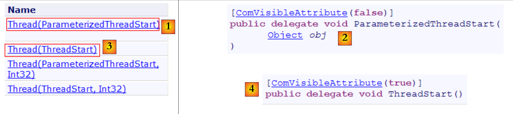
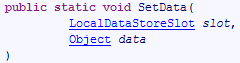

10. خيوط التنفيذ
10.1. فئة Thread
عند تشغيل تطبيق ما، يتم تنفيذه في تدفق تنفيذ يُسمى مؤشر ترابط. الفئة .NET التي تمثل مؤشر ترابط هي الفئة System.Threading.Thread ولها التعريف التالي:
المنشئات
 |
لن نستخدم في الأمثلة التالية سوى منشئات [1,3]. يقبل المنشئ [1] كمعلمة طريقة ذات التوقيع [2]، c.a.d. ذات معلمة من النوع object ولا تعطي نتيجة. يقبل المنشئ [3] كمعلمة طريقة ذات التوقيع [4]، c.a.d. التي لا تحتوي على معلمة ولا ترجع نتيجة.
الخصائص
بعض الخصائص المفيدة:
- Thread CurrentThread: خاصية ثابتة تعطي مرجعًا إلى مؤشر الترابط الذي يوجد فيه الكود الذي طلب هذه الخاصية
- string Name: اسم الخيط
- bool IsAlive: تشير إلى ما إذا كان الخيط قيد التنفيذ أم لا.
الأساليب
الأساليب الأكثر استخدامًا هي التالية:
- Start(), Start(object obj): تبدأ التنفيذ غير المتزامن للخيط، مع إمكانية تمرير معلومات إليه في نوع object.
- Abort(), Abort(object obj): لإنهاء مؤشر الترابط قسريًا
- Join(): يتم حظر مؤشر الترابط T1 الذي ينفذ T2.Join حتى يتم إنهاء مؤشر الترابط T2. هناك متغيرات لإنهاء الانتظار بعد فترة زمنية محددة.
- Sleep(int n): طريقة ثابتة - يتم تعليق الخيط الذي ينفذ الطريقة لمدة n مللي ثانية. ثم يفقد المعالج الذي يتم منحه لخيط آخر.
لنلقِ نظرة على تطبيق أول يسلط الضوء على وجود مؤشر ترابط رئيسي للتنفيذ، وهو المؤشر الذي يتم فيه تنفيذ الدالة Main لفئة ما:
using System;
using System.Threading;
namespace Chap8 {
class Program {
static void Main(string[] args) {
// تهيئة مؤشر الترابط الحالي
Thread main = Thread.CurrentThread;
// العرض
Console.WriteLine("Thread courant : {0}", main.Name);
// تغيير الاسم
main.Name = "main";
// التحقق
Console.WriteLine("Thread courant : {0}", main.Name);
// حلقة لا نهائية
while (true) {
// العرض
Console.WriteLine("{0} : {1:hh:mm:ss}", main.Name, DateTime.Now);
// إيقاف مؤقت
Thread.Sleep(1000);
}//while
}
}
}
- السطر 8: يتم استرداد مرجع إلى الخيط الذي يتم فيه تنفيذ الطريقة [main]
- الأسطر 10-14: يتم عرض اسم الخيط وتعديله
- الأسطر 17-22: حلقة تقوم بالعرض كل ثانية
- السطر 21: سيتم تعليق الخيط الذي يتم فيه تنفيذ الطريقة [main] لمدة ثانية واحدة
نتائج الشاشة هي كما يلي:
- السطر 1: لم يكن للخيط الحالي اسم
- السطر 2: أصبح له اسم
- الأسطر 3-7: العرض الذي يظهر كل ثانية
- السطر 8: يتم إيقاف البرنامج بواسطة Ctrl-C.
10.2. إنشاء خيوط التنفيذ
من الممكن أن تكون هناك تطبيقات يتم فيها تنفيذ أجزاء من الكود "بشكل متزامن" في خيوط تنفيذ مختلفة. عندما نقول أن threads يتم تنفيذها بشكل متزامن، فإننا غالبًا ما نستخدم مصطلحًا غير دقيق. إذا كان الجهاز يحتوي على معالج واحد فقط، كما هو الحال في كثير من الأحيان، فإن threads تتشارك هذا المعالج: فهي تتناوب عليه، كل واحدة على حدة، لفترة قصيرة (بضع ميلي ثوانٍ). وهذا ما يعطي انطباعًا زائفًا بالتوازي في التنفيذ. يعتمد الوقت المخصص لـ thread على عوامل مختلفة، منها أولويته التي لها قيمة افتراضية ولكن يمكن تحديدها أيضًا عن طريق البرمجة. عندما يتوفر المعالج لـ thread، فإنه يستخدمه عادةً طوال الوقت المخصص له. ومع ذلك، يمكنه تحريره قبل انتهاء المدة:
- بالانتظار لحدث ما (Wait, Join)
- بالانتقال إلى وضع السكون لفترة محددة (Sleep)
- يتم إنشاء مؤشر ترابط T أولاً بواسطة أحد المنشئين المذكورين أعلاه، على سبيل المثال:
حيث Start هي طريقة لها إحدى التوقيعات التالية:
إن إنشاء مؤشر ترابط لا يؤدي إلى تشغيله.
- يتم تشغيل مؤشر الترابط T بواسطة T.Start(): سيتم بعد ذلك تنفيذ الطريقة Start التي تم تمريرها إلى منشئ T بواسطة مؤشر الترابط T. لا ينتظر البرنامج الذي ينفذ التعليمات T.Start() انتهاء المهمة T: بل ينتقل فورًا إلى التعليمات التالية. لدينا إذن مهمتان يتم تنفيذهما بالتوازي. غالبًا ما يتعين عليهما التواصل مع بعضهما البعض لمعرفة مدى تقدم العمل المشترك المطلوب إنجازه. هذه هي مشكلة تزامن الخيوط.
- بمجرد بدء تشغيله، يعمل الخيط T بشكل مستقل. وسيتوقف عندما تنتهي الطريقة Start التي ينفذها من عملها.
- يمكن إجبار الخيط T على الإنهاء:
- تطلب T.Abort() من الخيط T أن ينتهي.
- يمكننا أيضًا انتظار انتهاء تنفيذه بواسطة T.Join(). لدينا هنا تعليمة مانعة: يتم إيقاف البرنامج الذي ينفذها حتى تنتهي المهمة T من عملها. هذه طريقة للتزامن.
دعونا ندرس البرنامج التالي:
using System;
using System.Threading;
namespace Chap8 {
class Program {
public static void Main() {
// تعيين الخيط الحالي
Thread main = Thread.CurrentThread;
// تعيين اسم للخيط
main.Name = "Main";
// إنشاء خيوط التنفيذ
Thread[] tâches = new Thread[5];
for (int i = 0; i < tâches.Length; i++) {
// يتم إنشاء الخيط i
tâches[i] = new Thread(Affiche);
// تحديد اسم الخيط
tâches[i].Name = i.ToString();
// تشغيل مؤشر الترابط i
tâches[i].Start();
}
// نهاية الروتين
Console.WriteLine("Fin du thread {0} à {1:hh:mm:ss}",main.Name,DateTime.Now);
}
public static void Affiche() {
// عرض بداية التنفيذ
Console.WriteLine("Début d'exécution de la méthode Affiche dans le Thread {0} : {1:hh:mm:ss}",Thread.CurrentThread.Name,DateTime.Now);
// التوقف مؤقتًا لمدة 1 ثانية
Thread.Sleep(1000);
// عرض نهاية التنفيذ
Console.WriteLine("Fin d'exécution de la méthode Affiche dans le Thread {0} : {1:hh:mm:ss}", Thread.CurrentThread.Name, DateTime.Now);
}
}
}
- الأسطر 8-10: نسمي الخيط الذي ينفذ الطريقة [Main]
- الأسطر 13-21: يتم إنشاء 5 خيوط وتشغيلها. يتم تخزين مراجع الخيوط في مصفوفة حتى يمكن استردادها لاحقًا. يقوم كل خيط بتنفيذ الطريقة Affiche في الأسطر 27-35.
- السطر 20: يتم تشغيل الخيط رقم i. هذه العملية غير معطلة. سيتم تنفيذ الخيط رقم i بالتوازي مع الخيط الخاص بالطريقة [Main] التي قامت بتشغيله.
- السطر 24: ينتهي الخيط الذي ينفذ الطريقة [Main].
- الأسطر 27-35: تقوم الطريقة [Affiche] بعرض المعلومات. تعرض اسم الخيط الذي يقوم بتنفيذها بالإضافة إلى أوقات بدء وانتهاء التنفيذ.
- السطر 31: سيتوقف أي مؤشر ترابط يقوم بتنفيذ الأسلوب [Affiche] لمدة ثانية واحدة. سيتم بعد ذلك تخصيص المعالج لخيط آخر في انتظار المعالج. في نهاية ثانية التوقف، سيصبح الخيط المتوقف مرشحًا للمعالج. وسيحصل عليه عندما يحين دوره. يعتمد ذلك على عوامل مختلفة، منها أولوية الخيوط الأخرى التي تنتظر المعالج.
والنتائج هي كما يلي:
هذه النتائج مفيدة للغاية:
- نرى أولاً أن بدء تنفيذ الخيط لا يؤدي إلى توقف. فقد بدأت الطريقة Main تنفيذ 5 خيوط بالتوازي وأنهت تنفيذها قبلهم. العملية
تشغيل مؤشر الترابط tâches[i] ولكن بمجرد القيام بذلك، يستمر التنفيذ فورًا مع التعليمات التالية دون انتظار انتهاء تنفيذ مؤشر الترابط.
- يجب أن تنفذ جميع الخيوط التي تم إنشاؤها الطريقة Affiche. ترتيب التنفيذ غير متوقع. حتى لو بدا في المثال أن ترتيب التنفيذ يتبع ترتيب طلبات التنفيذ، فلا يمكن استخلاص قواعد عامة من ذلك. يحتوي نظام التشغيل هنا على 6 خيوط ومعالج واحد. وسيقوم بتوزيع المعالج على هذه الخيوط الست وفقًا لقواعده الخاصة.
- نرى في النتائج نتيجة للطريقة Sleep. في المثال، الخيط 0 هو الذي ينفذ أولاً الطريقة Affiche. يتم عرض رسالة بدء التنفيذ ثم يقوم بتنفيذ الطريقة Sleep التي تعلقه لمدة ثانية واحدة. عندئذ يفقد المعالج الذي يصبح متاحًا لخيط آخر. يوضح المثال أن الخيط 1 هو الذي سيحصل عليه. سيتبع الخيط 1 نفس المسار وكذلك الخيوط الأخرى. عندما تنتهي ثانية السكون للخيط 0، يمكن أن يستأنف تنفيذه. يمنحه النظام المعالج ويمكنه إنهاء تنفيذ الطريقة Affiche.
لنعدل برنامجنا لإنهاء الطريقة Main بالتعليمات التالية:
// نهاية المعالجة
Console.WriteLine("Fin du thread " + main.Name);
// إيقاف جميع الخيوط
Environment.Exit(0);
يؤدي تنفيذ البرنامج الجديد إلى النتائج التالية:
- الأسطر 1-5: تبدأ الخيوط التي أنشأتها الدالة Main في التنفيذ ويتم إيقافها لمدة ثانية واحدة
- السطر 6: يستعيد مؤشر الترابط [Main] المعالج وينفذ الأمر:
توقف هذه التعليمات جميع مؤشرات الترابط في التطبيق وليس مؤشر الترابط Main فقط.
إذا أرادت الطريقة Main انتظار انتهاء تنفيذ الخيوط التي أنشأتها، فيمكنها استخدام الطريقة Join من الفئة Thread:
public static void Main() {
...
// في انتظار جميع الخيوط
for (int i = 0; i < tâches.Length; i++) {
// في انتظار انتهاء تنفيذ الخيط i
tâches[i].Join();
}
// نهاية المعالجة
Console.WriteLine("Fin du thread {0} à {1:hh:mm:ss}", main.Name, DateTime.Now);
}
- السطر 6: ينتظر مؤشر الترابط [Main] كل مؤشر ترابط. يتم حظره أولاً في انتظار مؤشر الترابط رقم 1، ثم مؤشر الترابط رقم 2، وهكذا... وفي النهاية، عندما يخرج من حلقة الأسطر 2-5، يكون مؤشر الترابط الخمسة التي أطلقها قد انتهت.
ونحصل عندئذٍ على النتائج التالية:
- السطر 11: انتهى مؤشر الترابط [Main] بعد انتهاء مؤشرات الترابط التي أطلقها.
10.3. فائدة الخيوط
الآن بعد أن أوضحنا وجود مؤشر ترابط افتراضي، وهو الذي ينفذ الطريقة Main، وبعد أن عرفنا كيفية إنشاء مؤشرات ترابط أخرى، دعونا نتوقف عند فائدة مؤشرات الترابط بالنسبة لنا والأسباب التي دفعتنا إلى عرضها هنا. هناك نوع من التطبيقات التي تتناسب جيدًا مع استخدام الخيوط، وهي تطبيقات العميل-الخادم على الإنترنت. سنقدمها في الفصل التالي. في تطبيق عميل-خادم على الإنترنت، يستجيب خادم موجود على جهاز S1 لطلبات العملاء الموجودين على أجهزة بعيدة C1، C2، ...، Cn.
 |
نستخدم يوميًا تطبيقات الإنترنت التي تتوافق مع هذا المخطط: خدمات الويب، والبريد الإلكتروني، وتصفح المنتديات، ونقل الملفات... في المخطط أعلاه، يجب أن يخدم الخادم S1 العملاء Ci في وقت واحد. إذا أخذنا مثال خادم FTP (بروتوكول نقل الملفات) الذي يوزع الملفات على عملائه، فإننا نعلم أن نقل الملف قد يستغرق أحيانًا عدة دقائق. وبالطبع، من المستحيل أن يحتكر عميل واحد الخادم بمفرده طوال هذه المدة. ما يتم فعله عادةً هو أن يقوم الخادم بإنشاء عدد من خيوط التنفيذ يساوي عدد العملاء. ثم يتولى كل خيط مسؤولية التعامل مع عميل معين. ونظرًا لأن المعالج يتم تقاسمه بشكل دوري بين جميع الخيوط النشطة في الجهاز، فإن الخادم يقضي بعض الوقت مع كل عميل، مما يضمن تزامن الخدمة.
 |
في الممارسة العملية، يستخدم الخادم مجموعة من الخيوط بعدد محدود، 50 على سبيل المثال. عندئذ يُطلب من العميل رقم 51 الانتظار.
10.4. تبادل المعلومات بين الخيوط
في الأمثلة السابقة، تم تهيئة مؤشر الترابط بالطريقة التالية:
حيث كان Run طريقة لها التوقيع التالي:
من الممكن أيضًا استخدام التوقيع التالي:
وهذا يسمح بنقل المعلومات إلى الخيط الذي تم تشغيله. وبالتالي
سيطلق الخيط t الذي سيقوم بدوره بتنفيذ الطريقة Run المرتبطة به بحكم التصميم، مع تمرير المعلمة الفعلية obj1 إليه. فيما يلي مثال:
using System;
using System.Threading;
namespace Chap8 {
class Program4 {
public static void Main() {
// تهيئة الخيط الحالي
Thread main = Thread.CurrentThread;
// تعيين اسم للخيط
main.Name = "Main";
// إنشاء خيوط التنفيذ
Thread[] tâches = new Thread[5];
Data[] data = new Data[5];
for (int i = 0; i < tâches.Length; i++) {
// إنشاء الخيط i
tâches[i] = new Thread(Sleep);
// تحديد اسم الخيط
tâches[i].Name = i.ToString();
// تشغيل مؤشر الترابط i
tâches[i].Start(data[i] = new Data { Début = DateTime.Now, Durée = i+1 });
}
// الانتظار حتى تنتهي جميع الخيوط
for (int i = 0; i < tâches.Length; i++) {
// الانتظار حتى انتهاء تنفيذ الخيط i
tâches[i].Join();
// عرض النتيجة
Console.WriteLine("Thread {0} terminé : début {1:hh:mm:ss}, durée programmée {2} s, fin {3:hh:mm:ss}, durée effective {4}",
tâches[i].Name,data[i].Début,data[i].Durée,data[i].Fin,(data[i].Fin-data[i].Début));
}
// نهاية الروتين
Console.WriteLine("Fin du thread {0} à {1:hh:mm:ss}", main.Name, DateTime.Now);
}
public static void Sleep(object infos) {
// استرداد المعلمة
Data data = (Data)infos;
// وضع السكون لمدة ثوانٍ
Thread.Sleep(data.Durée*1000);
// نهاية التنفيذ
data.Fin = DateTime.Now;
}
}
internal class Data {
// معلومات متنوعة
public DateTime Début { get; set; }
public int Durée { get; set; }
public DateTime Fin { get; set; }
}
}
- الأسطر 45-50: المعلومات من النوع [Data] التي تم تمريرها إلى الخيوط:
- Début: وقت بدء تنفيذ الخيط - يحدده الخيط المشغل
- Durée: مدة السكون بالثواني التي ينفذها الخيط الذي تم إطلاقه - يتم تحديدها بواسطة الخيط المُطلق
- Fin: وقت بدء تنفيذ الخيط - يحدده الخيط المُطلق
- الأسطر 35-43: الطريقة Sleep التي تنفذها الخيوط لها التوقيع void Sleep(object obj). سيكون المعامل الفعلي obj من النوع [Data] المحدد في السطر 45.
- الأسطر 15-22: إنشاء 5 خيوط
- السطر 17: يتم ربط كل مؤشر ترابط بالطريقة Sleep في السطر 35
- السطر 21: يتم تمرير كائن من النوع [Data] إلى الطريقة Start التي تطلق الخيط. في هذا الكائن، تم تسجيل وقت بدء تنفيذ الخيط وكذلك المدة بالثواني التي يجب أن يظل فيها في حالة سكون. يتم تخزين هذا الكائن في المصفوفة في السطر 14.
- السطور 24-30: ينتظر مؤشر الترابط [Main] انتهاء جميع مؤشرات الترابط التي أطلقها.
- السطور 28-29: يسترد الخيط [Main] الكائن data[i] من الخيط رقم i ويعرض محتواه.
- الأسطر 35-42: الطريقة Sleep التي تنفذها الخيوط
- السطر 37: يتم استرداد المعلمة من النوع [Data]
- السطر 39: يتم استخدام الحقل Durée للمعلمة لتحديد مدة Sleep
- السطر 41: تم تهيئة الحقل Fin الخاص بالمعلمة
نتائج التنفيذ هي كما يلي:
يوضح هذا المثال أن خيطين يمكنهما تبادل المعلومات:
- يمكن للخيط المُطلق التحكم في تنفيذ الخيط المُطلق من خلال تزويده بالمعلومات
- يمكن للخيط المُطلق إرجاع النتائج إلى الخيط المُطلق.
لكي يعرف الخيط المُطلق متى تتوفر النتائج التي ينتظرها، يجب إخطاره بانتهاء الخيط المُطلق. هنا، انتظر حتى انتهى باستخدام الطريقة Join. هناك طرق أخرى للقيام بنفس الشيء. سنرى ذلك لاحقًا.
10.5. الوصول المتزامن إلى الموارد المشتركة
10.5.1. الوصول المتزامن غير المتزامن
في الفقرة المتعلقة بتبادل المعلومات بين الخيوط، لم يتم تبادل المعلومات إلا بين خيطين وفي أوقات محددة. كان ذلك مثالاً كلاسيكياً على تمرير المعلمات. هناك حالات أخرى يتم فيها مشاركة المعلومات بين عدة خيوط قد ترغب في قراءتها أو تحديثها في نفس الوقت. وهنا يطرح مشكل سلامة هذه المعلومات. لنفترض أن المعلومات المشتركة هي بنية S تحتوي على معلومات متنوعة I1، I2، ... In.
- يبدأ مؤشر ترابط T1 في تحديث البنية S: فهو يعدل الحقل I1 ويتم مقاطعته قبل أن ينتهي من التحديث الكامل للبنية S
- ثم يقوم مؤشر الترابط T2 الذي يستعيد المعالج بقراءة البنية S لاتخاذ القرارات. ويقرأ بنية في حالة غير مستقرة: بعض الحقول محدثة، والبعض الآخر غير محدث.
يُطلق على هذه الحالة اسم الوصول إلى مورد مشترك، وهو في هذه الحالة البنية S، وغالبًا ما يكون من الصعب التعامل معها. لنأخذ المثال التالي لتوضيح المشكلات التي قد تنشأ:
- ستقوم إحدى التطبيقات بإنشاء n خيوط، حيث يتم تمرير n كمعلمة
- المورد المشترك هو عداد يجب أن يتم زيادته بواسطة كل خيط يتم إنشاؤه
- في نهاية التطبيق، يتم عرض قيمة العداد. لذا، من المفترض أن نحصل على n.
البرنامج هو التالي:
using System;
using System.Threading;
namespace Chap8 {
class Program {
// متغيرات الفئة
static int cptrThreads = 0; // عداد الخيوط
//main
public static void Main(string[] args) {
// دليل الاستخدام
const string syntaxe = "pg nbThreads";
const int nbMaxThreads = 100;
// التحقق من عدد الحجج
if (args.Length != 1) {
// خطأ
Console.WriteLine(syntaxe);
// إيقاف
Environment.Exit(1);
}
// التحقق من جودة الحجة
int nbThreads = 0;
bool erreur = false;
try {
nbThreads = int.Parse(args[0]);
if (nbThreads < 1 || nbThreads > nbMaxThreads)
erreur = true;
} catch {
// خطأ
erreur = true;
}
// خطأ؟
if (erreur) {
// خطأ
Console.Error.WriteLine("Nombre de threads incorrect (entre 1 et 100)");
// نهاية
Environment.Exit(2);
}
// إنشاء وتوليد الخيوط
Thread[] threads = new Thread[nbThreads];
for (int i = 0; i < nbThreads; i++) {
// إنشاء
threads[i] = new Thread(Incrémente);
// تسمية
threads[i].Name = "" + i;
// التشغيل
threads[i].Start();
}//for
// انتظار انتهاء الخيوط
for (int i = 0; i < nbThreads; i++) {
threads[i].Join();
}
// عرض العداد
Console.WriteLine("Nombre de threads générés : " + cptrThreads);
}
public static void Incrémente() {
// زيادة عداد الخيوط
// قراءة العداد
int valeur = cptrThreads;
// المتابعة
Console.WriteLine("A {0:hh:mm:ss}, le thread {1} a lu la valeur du compteur : {2}", DateTime.Now, Thread.CurrentThread.Name, cptrThreads);
// الانتظار
Thread.Sleep(1000);
// زيادة العداد
cptrThreads = valeur + 1;
// المتابعة
Console.WriteLine("A {0:hh:mm:ss}, le thread {1} a écrit la valeur du compteur : {2}", DateTime.Now, Thread.CurrentThread.Name, cptrThreads);
}
}
}
لن نتطرق إلى جزء إنشاء الخيوط الذي تمت دراسته بالفعل. دعونا نركز بدلاً من ذلك على الطريقة Incrémente، في السطر 59 التي يستخدمها كل خيط لزيادة العداد الثابت cptrThreads في السطر 8.
- السطر 62: يتم قراءة العداد
- السطر 66: يتوقف الخيط لمدة ثانية واحدة. وبالتالي يفقد المعالج
- السطر 68: يتم زيادة العداد
الخطوة 2 موجودة فقط لإجبار الخيط على فقدان وحدة المعالجة المركزية. سيتم منح هذه الوحدة لخيط آخر. في الواقع، لا شيء يضمن أن الخيط لن يتم مقاطعته بين اللحظة التي يقرأ فيها العداد واللحظة التي يزيد فيها قيمته. حتى لو كتبنا cptrThreads++، مما يعطي انطباعًا بوجود تعليمة واحدة، فإن الخطر موجود في فقدان وحدة المعالجة المركزية بين لحظة قراءة قيمة العداد ولحظة كتابة قيمته المضافة بـ 1. في الواقع، ستخضع العملية عالية المستوى cptrThreads++ لعدة تعليمات أساسية على مستوى المعالج. لذا، فإن الخطوة 2 المتمثلة في السكون لمدة ثانية واحدة موجودة فقط لتنظيم هذا الخطر.
النتائج التي تم الحصول عليها باستخدام 5 خيوط هي كما يلي:
عند قراءة هذه النتائج، يتضح ما يحدث:
- السطر 1: يقرأ مؤشر ترابط أول العداد. ويجد 0. يتوقف لمدة ثانية واحدة، وبالتالي يفقد المعالج
- السطر 2: ثم يستحوذ مؤشر ترابط ثانٍ على المعالج ويقرأ هو أيضًا قيمة العداد. لا تزال القيمة 0 لأن مؤشر الترابط السابق لم يقم بزيادتها بعد. يتوقف هو أيضًا لمدة ثانية واحدة ويفقد بدوره المعالج.
- السطور 1-5: في غضون ثانية واحدة، يتسنى للخيوط الخمسة جميعها المرور وقراءة القيمة 0.
- الأسطر 6-10: عندما تستيقظ الخيوط واحدة تلو الأخرى، ستزيد القيمة 0 التي قرأتها وتكتب القيمة 1 في العداد، وهو ما يؤكده البرنامج الرئيسي (Main) في السطر 11.
من أين تأتي المشكلة؟ قرأ الخيط الثاني قيمة خاطئة لأن الخيط الأول قد توقف قبل أن ينتهي من مهمته التي كانت تتمثل في تحديث العداد في النافذة. وهذا يقودنا إلى مفهوم المورد الحرج والقسم الحرج في البرنامج:
- المورد الحرج هو مورد لا يمكن أن يمتلكه سوى مؤشر ترابط واحد في كل مرة. هنا، المورد الحرج هو العداد.
- القسم الحرج في البرنامج هو تسلسل من التعليمات في تدفق تنفيذ الخيط الذي يصل خلاله إلى مورد حرج. يجب التأكد من أنه خلال هذا القسم الحرج، يكون هو الوحيد الذي يمكنه الوصول إلى المورد.
في مثالنا، القسم الحرج هو الكود الموجود بين قراءة العداد وكتابة قيمته الجديدة:
// قراءة العداد
int valeur = cptrThreads;
// في انتظار
Thread.Sleep(1000);
// زيادة العداد
cptrThreads = valeur + 1;
لتنفيذ هذا الكود، يجب التأكد من أن الخيط هو الوحيد الذي يقوم بذلك. يمكن مقاطعته، ولكن أثناء هذه المقاطعة، يجب ألا يتمكن خيط آخر من تنفيذ نفس الكود. توفر منصة .NET أدوات متنوعة لضمان الدخول الفردي إلى الأجزاء الحرجة من الكود. سنستعرض بعضها الآن.
10.5.2. جملة lock
تسمح جملة lock بتحديد قسم حرج بالطريقة التالية:
يجب أن يكون obj مرجعًا لكائن مرئي لجميع الخيوط التي تنفذ القسم الحرج. تضمن جملة lock أن خيطًا واحدًا فقط في كل مرة سينفذ القسم الحرج. يُعاد كتابة المثال السابق على النحو التالي:
using System;
using System.Threading;
namespace Chap8 {
class Program2 {
// متغيرات الفئة
static int cptrThreads = 0; // عداد الخيوط
static object synchro = new object(); // كائن التزامن
//main
public static void Main(string[] args) {
...
// انتظار انتهاء الخيوط
Thread.CurrentThread.Name = "Main";
for (int i = nbThreads - 1; i >= 0; i--) {
Console.WriteLine("A {0:hh:mm:ss}, le thread {1} attend la fin du thread {2}", DateTime.Now, Thread.CurrentThread.Name, threads[i].Name);
threads[i].Join();
Console.WriteLine("A {0:hh:mm:ss}, le thread {1} a été prévenu de la fin du thread {2}", DateTime.Now, Thread.CurrentThread.Name, threads[i].Name);
}
// عرض العداد
Console.WriteLine("Nombre de threads générés : " + cptrThreads);
}
public static void Incrémente() {
// زيادة عداد الخيوط
// يُطلب وصول حصري إلى العداد
Console.WriteLine("A {0:hh:mm:ss}, le thread {1} attend l'autorisation d'entrer dans la section critique", DateTime.Now, Thread.CurrentThread.Name);
lock (synchro) {
// قراءة العداد
int valeur = cptrThreads;
// المتابعة
Console.WriteLine("A {0:hh:mm:ss}, le thread {1} a lu la valeur du compteur : {2}", DateTime.Now, Thread.CurrentThread.Name, cptrThreads);
// انتظار
Thread.Sleep(1000);
// زيادة العداد
cptrThreads = valeur + 1;
// متابعة
Console.WriteLine("A {0:hh:mm:ss}, le thread {1} a écrit la valeur du compteur : {2}", DateTime.Now, Thread.CurrentThread.Name, cptrThreads);
}
Console.WriteLine("A {0:hh:mm:ss}, le thread {1} a quitté la section critique", DateTime.Now, Thread.CurrentThread.Name);
}
}
}
- السطر 9: synchro هو الكائن الذي سيسمح بمزامنة جميع الخيوط.
- الأسطر 16-23: تنتظر الطريقة [Main] الخيوط بالترتيب العكسي لإنشائها.
- الأسطر 29-40: تم تأطير الجزء الحرج من الطريقة Incrémente بواسطة الجملة lock.
النتائج التي تم الحصول عليها باستخدام 3 خيوط هي كما يلي:
- يدخل الخيط 0 أولاً إلى المنطقة الحرجة: الأسطر 1 و2 و6 و8
- سيتم حظر الخيطين الآخرين حتى يخرج الخيط 0 من القسم الحرج: السطور 3 و 4
- ثم يمر الخيط 1: الأسطر 7 و9 و10
- ثم يمر الخيط 2: الأسطر 11 و12 و13
- السطر 14: يتم إخطار الخيط Main الذي كان ينتظر انتهاء الخيط 2
- السطر 15: ينتظر مؤشر الترابط Main الآن انتهاء مؤشر الترابط 1. وقد انتهى هذا الأخير بالفعل. يتم إخطار مؤشر الترابط Main بذلك على الفور، السطر 16.
- السطران 17-18: تحدث نفس العملية مع الخيط 0
- السطر 19: عدد الخيوط صحيح
10.5.3. فئة Mutex
تسمح فئة System.Threading.Mutex أيضًا بتحديد الأقسام الحرجة. وهي تختلف عن جملة lock من حيث الرؤية:
- تسمح جملة lock بمزامنة خيوط من نفس التطبيق
- تسمح فئة Mutex بمزامنة خيوط من تطبيقات مختلفة.
سنستخدم المنشئ والطرق التالية:
تنشئ Mutex M | |
يطلب مؤشر الترابط T1 الذي ينفذ العملية M.WaitOne() ملكية كائن التزامن M. إذا لم يكن مؤشر الترابط Mutex M مملوكًا لأي مؤشر ترابط (وهو الحال في البداية)، يتم "تسليمه" إلى الخيط T1 الذي طلبه. إذا قام خيط T2 بعد ذلك بوقت قصير بنفس العملية، فسيتم حظره. في الواقع، لا يمكن أن ينتمي كائن Mutex إلا إلى خيط واحد. وسيتم إلغاء حظره عندما يقوم الخيط T1 بتحرير Mutex M الذي يحتفظ به. وبالتالي، يمكن أن يتم حظر عدة خيوط في انتظار Mutex M. | |
يتخلى الخيط T1 الذي يقوم بعملية M.ReleaseMutex() عن ملكية M Mutex. عندما يفقد الخيط T1 المعالج، يمكن للنظام أن يمنحه لأحد الخيوط المنتظرة للموتكس M. سيحصل عليه واحد فقط بدوره، بينما تظل الخيوط الأخرى المنتظرة لـ M معطلة |
يدير Mutex M الوصول إلى مورد مشترك R. يطلب مؤشر الترابط المورد R بواسطة M.WaitOne() ويعيده بواسطة M.ReleaseMutex(). يُعدّ الجزء الحرج من الكود الذي يجب ألا يتم تنفيذه إلا بواسطة مؤشر ترابط واحد في كل مرة موردًا مشتركًا. يمكن إجراء تزامن تنفيذ الجزء الحرج على النحو التالي:
حيث M هو كائن Mutex. يجب ألا ننسى تحرير Mutex الذي أصبح عديم الفائدة حتى يتمكن مؤشر ترابط آخر من الدخول إلى القسم الحرج، وإلا فإن مؤشرات الترابط التي تنتظر Mutex الذي لم يتم تحريره أبدًا لن تتمكن أبدًا من الوصول إلى المعالج.
إذا طبقنا ما رأيناه للتو على المثال السابق، فسيصبح تطبيقنا كما يلي:
using System;
using System.Threading;
namespace Chap8 {
class Program3 {
// متغيرات الفئة
static int cptrThreads = 0; // عداد الخيوط
static Mutex synchro = new Mutex(); // كائن التزامن
//main
public static void Main(string[] args) {
...
}
public static void Incrémente() {
....
synchro.WaitOne();
try {
...
} finally {
...
synchro.ReleaseMutex();
}
}
}
}
- السطر 9: أصبح كائن مزامنة الخيوط الآن هو Mutex.
- السطر 18: بداية القسم الحرج - يجب أن يدخل خيط واحد فقط. يتم التوقف حتى يتم تحرير Mutex synchro.
- السطر 33: نظرًا لأن Mutex يجب أن يكون متاحًا دائمًا، سواء حدثت استثناءات أم لا، فإننا ندير القسم الحرج باستخدام try / finally من أجل تحرير Mutex في finally.
- السطر 23: يتم تحرير Mutex بمجرد تجاوز القسم الحرج.
النتائج التي تم الحصول عليها هي نفسها كما في السابق.
10.5.4. الفئة AutoResetEvent
كائن AutoResetEvent هو حاجز لا يسمح بمرور سوى مؤشر ترابط واحد في كل مرة، مثل الأداتين السابقتين lock و Mutex. يتم إنشاء كائن AutoResetEvent بالطريقة التالية:
تشير القيمة المنطقية état إلى حالة الحاجز (مغلق (false) أو مفتوح (true)). وسيشير الخيط الذي يرغب في عبور الحاجز إلى ذلك على النحو التالي:
- إذا كان الحاجز مفتوحًا، يمر الخيط ويتم إغلاق الحاجز من خلفه. إذا كان هناك عدة خيوط في انتظار، فمن المؤكد أن خيطًا واحدًا فقط سيمر.
- إذا كان الحاجز مغلقًا، يتم حظر الخيط. وسيقوم خيط آخر بفتحه عندما يحين الوقت. ويعتمد هذا الوقت كليًا على المشكلة التي يتم معالجتها. سيتم فتح الحاجز من خلال العملية:
قد يحدث أن يرغب مؤشر ترابط في إغلاق حاجز. ويمكنه القيام بذلك من خلال:
إذا استبدلنا في المثال السابق الكائن Mutex بكائن من النوع AutoResetEvent، يصبح الكود كما يلي:
using System;
using System.Threading;
namespace Chap8 {
class Program4 {
// متغيرات الفئة
static int cptrThreads = 0; // عداد الخيوط
static EventWaitHandle synchro = new AutoResetEvent(false); // كائن التزامن
//الرئيسي
public static void Main(string[] args) {
....
// فتح حاجز القسم الحرج
Console.WriteLine("A {0:hh:mm:ss}, le thread {1} ouvre la barrière de la section critique", DateTime.Now, Thread.CurrentThread.Name);
synchro.Set();
// في انتظار انتهاء الخيوط
...
// عرض العداد
Console.WriteLine("Nombre de threads générés : " + cptrThreads);
}
public static void Incrémente() {
// زيادة عداد الخيوط
// يُطلب الوصول الحصري إلى العداد
...
synchro.WaitOne();
try {
...
} finally {
// يتم تحرير المورد
...
synchro.Set();
}
}
}
}
- السطر 9: يتم إنشاء الحاجز مغلقًا. سيتم فتحه بواسطة الخيط Main في السطر 16.
- السطر 27: يطلب الخيط المسؤول عن زيادة عداد الخيوط الإذن بالدخول إلى القسم الحرج. ستتراكم الخيوط المختلفة أمام الحاجز المغلق. عندما يفتحه الخيط Main، سيمر أحد الخيوط المنتظرة.
- السطر 33: عندما ينتهي من عمله، يعيد فتح الحاجز مما يسمح لخيط آخر بالدخول.
نحصل على نتائج مشابهة للنتائج السابقة.
10.5.5. فئة Interlocked
تسمح فئة Interlocked بجعل مجموعة من العمليات ذرية. في مجموعة العمليات atomique، إما أن يتم تنفيذ جميع العمليات بواسطة الخيط الذي ينفذ المجموعة أو لا يتم تنفيذ أي منها. لا نبقى في حالة تم فيها تنفيذ بعض العمليات دون غيرها. تهدف كائنات التزامن lock و Mutex و AutoResetEvent جميعها إلى جعل atomique مجموعة من العمليات. يتم الحصول على هذه النتيجة على حساب حظر الخيوط. تسمح فئة Interlocked، بالنسبة للعمليات البسيطة ولكن المتكررة إلى حد ما، بتجنب حظر الخيوط. توفر فئة Interlocked الطرق الثابتة التالية:

تتميز الطريقة Increment بالتوقيع التالي:
وهي تسمح بزيادة المعلمة location بمقدار 1. العملية مضمونة atomique.
يمكن أن يكون برنامجنا لحساب عدد الخيوط كما يلي:
using System;
using System.Threading;
namespace Chap8 {
class Program5 {
// متغيرات الفئة
static int cptrThreads = 0; // عداد الخيوط
//main
public static void Main(string[] args) {
...
}
public static void Incrémente() {
// زيادة عداد الخيوط
Interlocked.Increment(ref cptrThreads);
}
}
}
- السطر 17: يتم زيادة عداد الخيوط بشكل ذري.
10.6. الوصول المتزامن إلى موارد مشتركة متعددة
10.6.1. مثال
في الأمثلة السابقة، كان هناك مورد واحد مشترك بين الخيوط المختلفة. قد تتعقد الحالة إذا كان هناك عدة موارد وكانت تعتمد على بعضها البعض. قد تحدث حالة تعطل متبادل على وجه الخصوص. هذه الحالة، التي تُعرف أيضًا باسم deadlock، هي الحالة التي ينتظر فيها خيطان بعضهما البعض. لنفكر في الإجراءات التالية التي تتبع بعضها البعض زمنيًا:
- يحصل مؤشر الترابط T1 على ملكية Mutex M1 للوصول إلى مورد مشترك R1
- يحصل مؤشر الترابط T2 على ملكية Mutex M2 للوصول إلى مورد مشترك R2
- يطلب مؤشر الترابط T1 الميوتكس M2. يتم حظره.
- يطلب مؤشر الترابط T2 Mutex M1. وهو محجوب.
هنا، ينتظر الخيطان T1 و T2 بعضهما البعض. تظهر هذه الحالة عندما تحتاج الخيوط إلى موردين مشتركين، المورد R1 الذي يتحكم فيه Mutex M1 والمورد R2 الذي يتحكم فيه Mutex M2. أحد الحلول الممكنة هو طلب الموردين في نفس الوقت باستخدام Mutex واحد M. لكن هذا ليس ممكنًا دائمًا إذا كان ذلك يؤدي، على سبيل المثال، إلى تخصيص مورد مكلف لفترة طويلة. حل آخر هو أن يقوم مؤشر الترابط الذي يمتلك M1 ولا يستطيع الحصول على M2، بإطلاق M1 لتجنب التداخل.
- لدينا مصفوفة تضع فيها الخيوط البيانات (الكتاب) ويأتي آخرون لقراءتها (القراء).
- الكتاب متساوون فيما بينهم ولكنهم حصريون: يمكن لكتاب واحد فقط في كل مرة إيداع بياناته في المصفوفة.
- القراء متساوون فيما بينهم ولكنهم حصريون: يمكن لقارئ واحد فقط في كل مرة قراءة البيانات الموضوعة في المصفوفة.
- لا يمكن للقارئ قراءة البيانات الموجودة في المصفوفة إلا عندما يقوم كاتب بإيداعها فيها، ولا يمكن للكاتب إيداع بيانات جديدة في المصفوفة إلا عندما يتم قراءة البيانات الموجودة فيها من قبل قارئ.
يمكن التمييز بين موردين مشتركين:
- الجدول في وضع الكتابة: يجب أن يكون هناك كاتب واحد فقط في كل مرة يمكنه الوصول إليه.
- الجدول القابل للقراءة: يجب أن يكون هناك قارئ واحد فقط في كل مرة يمكنه الوصول إليه.
وهناك ترتيب لاستخدام هذه الموارد:
- يجب أن يأتي القارئ دائمًا بعد الكاتب.
- يجب أن يأتي الكاتب دائمًا بعد القارئ، باستثناء المرة الأولى.
يمكن التحكم في الوصول إلى هذين الموردين باستخدام حاجزين من النوع AutoResetEvent:
- سيتحكم الحاجز peutEcrire في وصول الكُتّاب إلى الجدول.
- ستتحكم البوابة peutLire في وصول القراء إلى اللوحة.
- سيتم إنشاء الحاجز peutEcrire مفتوحًا في البداية، مما يسمح بمرور كاتب واحد ويمنع دخول جميع الكتّاب الآخرين.
- سيتم إنشاء الحاجز peutLire مغلقًا في البداية، مما يمنع دخول جميع القراء.
- عندما ينتهي كاتب من عمله، سيفتح الحاجز peutLire للسماح بدخول قارئ.
- عندما ينتهي القارئ من عمله، سيفتح الحاجز peutEcrire للسماح بدخول كاتب.
البرنامج الذي يوضح هذه المزامنة حسب الأحداث هو التالي:
using System;
using System.Threading;
namespace Chap8 {
class Program {
// استخدام خيوط القراءة والكتابة
// يوضح استخدام أحداث التزامن
// متغيرات الفئة
static int[] data = new int[3]; // مورد مشترك بين خيوط القراءة وخيوط الكتابة
static Random objRandom = new Random(DateTime.Now.Second); // مولد أرقام عشوائية
static AutoResetEvent peutLire; // يشير إلى أنه يمكن قراءة محتوى data
static AutoResetEvent peutEcrire; // يشير إلى أنه يمكن كتابة محتوى data
//main
public static void Main(string[] args) {
// عدد الخيوط المطلوب إنشاؤها
const int nbThreads = 2;
// تهيئة العلامات
peutLire = new AutoResetEvent(false); // لا يمكن القراءة بعد
peutEcrire = new AutoResetEvent(true); // يمكن الكتابة بالفعل
// إنشاء خيوط القراءة
Thread[] lecteurs = new Thread[nbThreads];
for (int i = 0; i < nbThreads; i++) {
// إنشاء
lecteurs[i] = new Thread(Lire);
lecteurs[i].Name = "L" + i.ToString();
// التشغيل
lecteurs[i].Start();
}
// إنشاء مؤشرات ترابط الكتابة
Thread[] écrivains = new Thread[nbThreads];
for (int i = 0; i < nbThreads; i++) {
// إنشاء
écrivains[i] = new Thread(Ecrire);
écrivains[i].Name = "E" + i.ToString();
// التشغيل
écrivains[i].Start();
}
//نهاية اليد
Console.WriteLine("Fin de Main...");
}
// قراءة محتوى الجدول
public static void Lire() {
...
}
// الكتابة في الجدول
public static void Ecrire() {
....
}
}
}
- السطر 11: المصفوفة data هي المورد المشترك بين خيوط القراءة والكتابة. يتم مشاركتها للقراءة بواسطة خيوط القراءة، وللكتابة بواسطة خيوط الكتابة.
- السطر 13: يُستخدم الكائن peutLire لإخطار خيوط القراءة بأنها يمكنها قراءة المصفوفة data. يتم تعيينه على "صحيح" بواسطة خيط الكتابة الذي ملأ المصفوفة data. يتم تهيئته إلى false، السطر 23. يجب أن يقوم مؤشر ترابط الكتابة بملء المصفوفة أولاً قبل تمرير الحدث peutLire إلى vrai.
- السطر 14: يُستخدم الكائن peutEcrire لإعلام خيوط الكتابة بأنه يمكنها الكتابة في المصفوفة data. يتم تعيينه على "صحيح" بواسطة خيط القراءة الذي استخدم المصفوفة data بالكامل. يتم تهيئته إلى true، السطر 24. في الواقع، المصفوفة data متاحة للكتابة.
- الأسطر 27-34: إنشاء وتشغيل مؤشرات الترابط القارئة
- الأسطر 37-44: إنشاء وتشغيل مؤشرات الترابط المكتوبة
الطريقة Lire التي تنفذها خيوط القراءة هي التالية:
public static void Lire() {
// المتابعة
Console.WriteLine("Méthode [Lire] démarrée par le thread n° {0}", Thread.CurrentThread.Name);
// يجب انتظار إذن القراءة
peutLire.WaitOne();
// قراءة الجدول
for (int i = 0; i < data.Length; i++) {
//الانتظار لمدة 1 ثانية
Thread.Sleep(1000);
// عرض
Console.WriteLine("{0:hh:mm:ss} : Le lecteur {1} a lu le nombre {2}", DateTime.Now, Thread.CurrentThread.Name, data[i]);
}
// يمكن الكتابة
peutEcrire.Set();
// المتابعة
Console.WriteLine("Méthode [Lire] terminée par le thread n° {0}", Thread.CurrentThread.Name);
}
- السطر 5: ننتظر حتى يشير مؤشر ترابط الكتابة إلى أن المصفوفة قد تم ملؤها. عند استلام هذه الإشارة، سيتم السماح بمرور مؤشر ترابط قراءة واحد فقط من مؤشرات الترابط التي تنتظر هذه الإشارة.
- الأسطر 7-12: استغلال المصفوفة data مع وجود Sleep في المنتصف لإجبار الخيط على فقدان المعالج.
- السطر 14: يُشير إلى خيوط الكتابة بأن المصفوفة قد تمت قراءتها ويمكن ملؤها من جديد.
الطريقة Ecrire التي تنفذها خيوط الكتابة هي التالية:
public static void Ecrire() {
// المتابعة
Console.WriteLine("Méthode [Ecrire] démarrée par le thread n° {0}", Thread.CurrentThread.Name);
// يجب انتظار إذن الكتابة
peutEcrire.WaitOne();
// كتابة الجدول
for (int i = 0; i < data.Length; i++) {
//انتظار 1 ثانية
Thread.Sleep(1000);
// عرض
data[i] = objRandom.Next(0, 1000);
Console.WriteLine("{0:hh:mm:ss} : L'écrivain {1} a écrit le nombre {2}", DateTime.Now, Thread.CurrentThread.Name, data[i]);
}
// يمكن القراءة
peutLire.Set();
// متابعة
Console.WriteLine("Méthode [Ecrire] terminée par le thread n° {0}", Thread.CurrentThread.Name);
}
- السطر 5: ننتظر حتى يشير مؤشر ترابط قارئ إلى أن المصفوفة قد تمت قراءتها. عند استلام هذه الإشارة، سيتمكن مؤشر ترابط واحد فقط من مؤشرات الترابط المكتوبة التي تنتظر هذه الإشارة من المرور.
- الأسطر 7-13: استغلال المصفوفة data مع وجود Sleep في المنتصف لإجبار الخيط على فقدان المعالج.
- السطر 15: يُعلم خيوط القراءة بأن المصفوفة قد تم ملؤها ويمكن قراءتها مرة أخرى.
يؤدي التنفيذ إلى النتائج التالية:
يمكن ملاحظة النقاط التالية:
- يوجد قارئ واحد فقط في كل مرة، على الرغم من أنه يفقد المعالج في القسم الحرج Lire
- يوجد بالفعل كاتب واحد فقط في كل مرة، على الرغم من أن هذا الكاتب يفقد المعالج في القسم الحرج Ecrire
- لا يقرأ القارئ إلا عندما يكون هناك شيء لقراءته في الجدول
- لا يكتب الكاتب إلا عندما يتم قراءة الجدول بالكامل
10.6.2. فئة Monitor
في المثال السابق:
- هناك موردان مشتركان يجب إدارتهما
- بالنسبة لمورد معين، تكون الخيوط متساوية.
عندما يتم حظر مؤشرات الترابط المكتوبة على التعليمات peutEcrire.WaitOne، يتم إلغاء حظر أحدها، أي واحد منها، بواسطة العملية peutEcrire.Set. إذا كان على العملية السابقة فتح الحاجز لمؤشر ترابط معين، فإن الأمور تصبح أكثر تعقيدًا.
يمكننا أن نعتبر ذلك بمثابة مؤسسة تستقبل الجمهور في شبابيك حيث كل شباك متخصص. عندما يصل العميل، يأخذ تذكرة من آلة توزيع التذاكر للشباك X ثم يذهب للجلوس. كل تذكرة مرقمة ويتم استدعاء العملاء برقمهم عبر مكبر الصوت. أثناء انتظاره، يفعل العميل ما يشاء. يمكنه القراءة أو الغفوة. يتم إيقاظه في كل مرة عبر مكبر الصوت الذي يعلن أن الرقم Y مطلوب عند الشباك X. إذا كان هو المقصود، ينهض العميل ويتوجه إلى الشباك X، وإلا فإنه يواصل ما كان يفعله.
يمكننا هنا العمل بطريقة مماثلة. لنأخذ مثال الكتّاب:
خيوطهم محجوبة | |
يُعلم الخيط الذي كان يستخدم المصفوفة في وضع القراءة الكُتّاب بأن المصفوفة متاحة. وقد قام هو أو خيط آخر بتثبيت خيط الكاتب الذي يجب أن يتجاوز الحاجز. | |
يتحقق كل مؤشر ترابط مما إذا كان هو المختار. إذا كان الأمر كذلك، فإنه يتجاوز الحاجز. إذا لم يكن الأمر كذلك، فإنه يعود إلى حالة الانتظار. |
تسمح فئة Monitor بتنفيذ هذا السيناريو.

نصف الآن بنية قياسية (pattern)، مقترحة في الفصل Threading من كتاب C# 3.0 المشار إليه في مقدمة هذا المستند، قادرة على حل مشاكل الحاجز مع شرط الدخول.
- أولاً، تصل الخيوط التي تتشارك موردًا (النافذة، ...) إليه عبر كائن سنسميه رمزًا. لفتح الحاجز المؤدي إلى النافذة، يجب أن يكون لديك الرمز لفتحه، ولا يوجد سوى رمز واحد. لذلك يجب أن تتبادل الخيوط الرمز فيما بينها.
- للذهاب إلى النافذة، تطلب الخيوط أولاً الرمز:
إذا كان الرمز متاحًا، يتم منحه للخيط الذي نفذ العملية السابقة، وإلا يتم وضع الخيط في قائمة انتظار الرمز.
- إذا كان الوصول إلى الشباك يتم بشكل غير منظم، c.a.d. في حالة عدم أهمية الشخص الذي يدخل، تكفي العملية السابقة. يذهب الخيط الذي يمتلك الرمز إلى الشباك. إذا كان الوصول يتم بشكل منظم، يتحقق الخيط الذي يمتلك الرمز من أنه يستوفي الشرط للذهاب إلى الشباك:
إذا لم يكن الخيط هو المطلوب عند النافذة، فإنه يتنازل عن دوره بإعادة الرمز المميز. ويدخل في حالة توقف. وسيتم تنشيطه بمجرد أن يصبح الرمز المميز متاحًا له مرة أخرى. ثم يتحقق مرة أخرى مما إذا كان يستوفي الشرط للذهاب إلى النافذة. لا يمكن إجراء العملية Monitor.Wait(jeton) التي تطلق الرمز إلا إذا كان الخيط هو مالك الرمز. إذا لم يكن الأمر كذلك، يتم إطلاق استثناء.
- يذهب الخيط الذي يتحقق من الشرط للذهاب إلى النافذة إلى هناك:
- // العمل عند النافذة
- ....
قبل مغادرة النافذة، يجب على الخيط إعادة الرمز المميز، وإلا فإن الخيوط المحجوبة في انتظار الرمز المميز ستظل محجوبة إلى أجل غير مسمى. هناك حالتان مختلفتان:
- الحالة الأولى هي تلك التي يكون فيها الخيط الذي يمتلك الرمز هو نفسه الذي يُعلم الخيوط المنتظرة للرمز بأن الرمز متاح. وسيقوم بذلك بالطريقة التالية:
السطر 6، يقوم بإيقاظ الخيوط التي تنتظر الرمز. هذا الإيقاظ يعني أنها تصبح مؤهلة لتلقي الرمز. هذا لا يعني أنها ستتلقاه على الفور. السطر 8، يتم تحرير الرمز. ستتلقى جميع الخيوط المؤهلة الرمز بالتناوب، بطريقة غير محددة. سيتيح ذلك لها الفرصة للتحقق مرة أخرى مما إذا كانت تستوفي شرط الوصول. قامت الخيط التي حررت الرمز بتعديل هذا الشرط في السطر 4 للسماح لخيط جديد بالدخول. أول خيط يتحقق من الشرط يحتفظ بالرمز ويتوجه إلى النافذة بدوره.
- الحالة الثانية هي تلك التي لا يكون فيها الخيط الذي يمتلك الرمز هو الذي يجب أن يُعلم الخيوط المنتظرة أن الرمز متاح. ومع ذلك، يجب عليه تحريره لأن الخيط المكلف بإرسال هذه الإشارة يجب أن يكون حامل الرمز. وسيقوم بذلك من خلال العملية:
أصبح الرمز متاحًا الآن، ولكن الخيوط التي تنتظره (التي قامت بعملية Wait(jeton)) لم يتم إخطارها بذلك. يتم تكليف خيط آخر بهذه المهمة، والذي سيقوم في وقت ما بتنفيذ كود مشابه لما يلي:
في النهاية، فإن البنية القياسية المقترحة في الفصل Threading من كتاب C# 3.0 هي كما يلي:
- تحديد رمز الوصول إلى النافذة:
- طلب الوصول إلى النافذة:
lock(jeton){
while (! jeNeSuisPasCeluiQuiEstAttendu)
Monitor.Wait(jeton);
}
// الانتقال إلى النافذة
...
يعادل
تجدر الإشارة إلى أنه في هذا المخطط يتم تحرير الرمز المميز فورًا، بمجرد تجاوز الحاجز. يمكن عندئذٍ لخيط آخر اختبار شرط الوصول. وبالتالي، فإن البنية السابقة تسمح بدخول جميع الخيوط التي تتحقق من شرط الوصول. إذا لم يكن هذا هو المطلوب، فيمكن كتابة:
lock(jeton){
while (! jeNeSuisPasCeluiQuiEstAttendu)
Monitor.Wait(jeton);
// الانتقال إلى النافذة
...
}
حيث لا يتم تحرير الرمز المميز إلا بعد المرور عبر النافذة.
- تعديل شرط الوصول إلى النافذة وإخطار الخيوط الأخرى
lock(jeton){
// تعديل شرط الوصول إلى النافذة
...
// إخطار الخيوط المنتظرة للرمز
Monitor.PulseAll(jeton);
}
فيما سبق، لا يمكن تعديل شرط الوصول إلا بواسطة الخيط الذي يمتلك الرمز المميز. يمكننا أيضًا كتابة:
// تعديل شرط الوصول إلى النافذة
...
// إخطار الخيوط المنتظرة للحصول على الرمز
Monitor.PulseAll(jeton);
// تحرير الرمز
Monitor.Exit(jeton);
إذا كان الخيط يمتلك الرمز المميز بالفعل.
بناءً على هذه المعلومات، يمكننا إعادة كتابة تطبيق القراءة/الكتابة عن طريق تحديد ترتيب القراء والكتاب للوصول إلى منافذهم الخاصة. فيما يلي الكود:
using System;
using System.Threading;
namespace Chap8 {
class Program2 {
// استخدام مؤشرات الترابط للقراءة والكتابة
// يوضح استخدام أحداث التزامن
// متغيرات الفئة
static int[] data = new int[3]; // مورد مشترك بين خيوط القراءة وخيوط الكتابة
static Random objRandom = new Random(DateTime.Now.Second); // مولد أرقام عشوائية
static object peutLire = new object(); // يشير إلى أنه يمكن قراءة محتوى data
static object peutEcrire = new object(); // يشير إلى أنه يمكن كتابة محتوى data
static bool lectureAutorisée = false; // للسماح بقراءة المصفوفة
static bool écritureAutorisée = false; // للسماح بالكتابة في الجدول
static string[] ordreLecture; // يحدد ترتيب القراء
static string[] ordreEcriture; // يحدد ترتيب الكُتّاب
static int lecteurSuivant = 0; // يحدد رقم القارئ التالي
static int écrivainSuivant = 0; // يشير إلى رقم الكاتب التالي
//يدوي
public static void Main(string[] args) {
// عدد الخيوط المطلوب إنشاؤها
const int nbThreads = 5;
// إنشاء خيوط القراءة
Thread[] lecteurs = new Thread[nbThreads];
for (int i = 0; i < nbThreads; i++) {
// إنشاء
lecteurs[i] = new Thread(Lire);
lecteurs[i].Name = "L" + i.ToString();
// التشغيل
lecteurs[i].Start();
}
// إنشاء أمر القراءة
ordreLecture = new string[nbThreads];
for (int i = 0; i < nbThreads; i++) {
ordreLecture[i] = lecteurs[nbThreads - i - 1].Name;
Console.WriteLine("Le lecteur {0} est en position {1}", ordreLecture[i], i);
}
// إنشاء مؤشرات الترابط المكتوبة
Thread[] écrivains = new Thread[nbThreads];
for (int i = 0; i < nbThreads; i++) {
// إنشاء
écrivains[i] = new Thread(Ecrire);
écrivains[i].Name = "E" + i.ToString();
// التشغيل
écrivains[i].Start();
}
// إنشاء أمر الكتابة
ordreEcriture = new string[nbThreads];
for (int i = 0; i < nbThreads; i++) {
ordreEcriture[i] = écrivains[i].Name;
Console.WriteLine("L'écrivain {0} est en position {1}", ordreEcriture[i], i);
}
// ترخيص الكتابة
lock (peutEcrire) {
écritureAutorisée = true;
Monitor.Pulse(peutEcrire);
}
//نهاية اليد
Console.WriteLine("Fin de Main...");
}
// قراءة محتوى الجدول
public static void Lire() {
...
}
// الكتابة في الجدول
public static void Ecrire() {
...
}
}
}
يخضع الوصول إلى منفذ القراءة للعناصر التالية:
- السطر 13: الرمز المميز peutLire
- السطر 15: القيمة المنطقية lectureAutorisée
- السطر 17: الجدول المرتب للقراء. يذهب القراء إلى نافذة القراءة حسب ترتيب هذا الجدول الذي يحتوي على أسمائهم.
- السطر 19: يشير الرمز lecteurSuivant إلى رقم القارئ التالي المصرح له بالذهاب إلى نافذة الخدمة.
يخضع الوصول إلى نافذة الكتابة للعناصر التالية:
- السطر 14: الرمز peutEcrire
- السطر 16: القيمة المنطقية écritureAutorisée
- السطر 18: الجدول المرتب للكتاب. يذهب الكتاب إلى نافذة الكتابة حسب ترتيب هذا الجدول الذي يحتوي على أسمائهم.
- السطر 20: يشير الرمز écrivainSuivant إلى رقم الكاتب التالي المصرح له بالذهاب إلى شباك الكتابة.
العناصر الأخرى في الكود هي كما يلي:
- الأسطر 29-36: إنشاء وتشغيل مؤشرات ترابط القراء. سيتم حظرها جميعًا لأن القراءة غير مسموح بها (السطر 15).
- الأسطر 39-43: سيتم ترتيب مرورهم إلى الشباك بترتيب عكسي لترتيب إنشائهم.
- الأسطر 46-53: إنشاء وتشغيل مؤشرات ترابط الكتّاب. سيتم حظرها جميعًا لأن الكتابة غير مسموح بها (السطر 16).
- الأسطر 56-60: سيتم ترتيب مرورها عند النافذة حسب ترتيب إنشائها.
- السطر 64: يُسمح بالكتابة
- السطر 65: يتم إخطار الكُتّاب بأن شيئًا ما قد تغير.
الطريقة Lire هي كما يلي:
public static void Lire() {
// المتابعة
Console.WriteLine("Méthode [Lire] démarrée par le thread n° {0}", Thread.CurrentThread.Name);
// يجب انتظار إذن القراءة
lock (peutLire) {
while (!lectureAutorisée || ordreLecture[lecteurSuivant] != Thread.CurrentThread.Name) {
Monitor.Wait(peutLire);
}
// قراءة الجدول
for (int i = 0; i < data.Length; i++) {
//الانتظار لمدة 1 ثانية
Thread.Sleep(1000);
// عرض
Console.WriteLine("{0:hh:mm:ss} : Le lecteur {1} a lu le nombre {2}", DateTime.Now, Thread.CurrentThread.Name, data[i]);
}
// القارئ التالي
lectureAutorisée = false;
lecteurSuivant++;
// يتم إخطار الكُتّاب بأنه يمكنهم الكتابة
lock (peutEcrire) {
écritureAutorisée = true;
Monitor.PulseAll(peutEcrire);
}
// المتابعة
Console.WriteLine("Méthode [Lire] terminée par le thread n° {0}", Thread.CurrentThread.Name);
}
}
- يتم التحكم في الوصول إلى الشباك بالكامل بواسطة lock في الأسطر 5-27. يحتفظ القارئ الذي يحصل على الرمز بالرمز طوال فترة وجوده عند الشباك
- الأسطر 6-8: يقوم القارئ الذي حصل على الرمز في السطر 5 بإطلاقه إذا لم يكن القراءة مسموحة أو إذا لم يكن دوره في المرور.
- الأسطر 10-15: المرور عبر النافذة (استخدام الجدول)
- الأسطر 17-18: يقوم الخيط بتغيير شروط الوصول إلى نافذة القراءة. تجدر الإشارة إلى أنه لا يزال يمتلك رمز القراءة وأن هذه التعديلات لا تسمح بعد لأي قارئ بالمرور.
- الأسطر 20-23: يقوم الخيط بتغيير شروط الوصول إلى نافذة الكتابة وإخطار جميع الكُتّاب المنتظرين بأن شيئًا ما قد تغير.
- السطر 27: ينتهي lock، ويتم تحرير الرمز peutLire. يمكن لخيط قراءة أن يحصل عليه عندئذٍ في السطر 5، لكنه لن يجتاز شرط الوصول لأن القيمة المنطقية lectureAutorisée هي "خطأ". علاوة على ذلك، تظل جميع الخيوط التي تنتظر الرمز peutLire في حالة انتظار لأن العملية PulseAll(peutLire) لم تتم بعد.
الطريقة Ecrire هي كما يلي:
public static void Ecrire() {
// متابعة
Console.WriteLine("Méthode [Ecrire] démarrée par le thread n° {0}", Thread.CurrentThread.Name);
// يجب انتظار إذن الكتابة
lock (peutEcrire) {
while (!écritureAutorisée || ordreEcriture[écrivainSuivant] != Thread.CurrentThread.Name) {
Monitor.Wait(peutEcrire);
}
// كتابة الجدول
for (int i = 0; i < data.Length; i++) {
//انتظار 1 ثانية
Thread.Sleep(1000);
// عرض
data[i] = objRandom.Next(0, 1000);
Console.WriteLine("{0:hh:mm:ss} : L'écrivain {1} a écrit le nombre {2}", DateTime.Now, Thread.CurrentThread.Name, data[i]);
}
// الكاتب التالي
écritureAutorisée = false;
écrivainSuivant++;
// يتم تنبيه القراء الذين ينتظرون الرمز المميز peutLire
lock (peutLire) {
lectureAutorisée = true;
Monitor.PulseAll(peutLire);
}
// المتابعة
Console.WriteLine("Méthode [Ecrire] terminée par le thread n° {0}", Thread.CurrentThread.Name);
}
}
- يتم التحكم في الوصول إلى نافذة الكتابة بالكامل بواسطة lock في الأسطر 5-27. يحتفظ الكاتب الذي يحصل على الرمز بالرمز طوال فترة وجوده في النافذة
- الأسطر 6-8: يقوم الكاتب الذي حصل على الرمز في السطر 5 بإطلاقه إذا لم يكن الكتابة مسموحة أو إذا لم يكن دوره.
- الأسطر 10-16: المرور عبر النافذة (استخدام الجدول)
- السطور 18-19: يقوم الخيط بتغيير شروط الوصول إلى نافذة الكتابة. تجدر الإشارة إلى أنه لا يزال يمتلك رمز الكتابة وأن هذه التعديلات لا تسمح بعد لأي كاتب بالمرور.
- الأسطر 21-24: يقوم الخيط بتغيير شروط الوصول إلى منفذ القراءة وإخطار جميع القراء المنتظرين بأن شيئًا ما قد تغير.
- السطر 27: ينتهي lock، ويتم تحرير الرمز المميز peutEcrire. يمكن لخيط كتابة أن يحصل عليه عندئذٍ في السطر 5، لكنه لن يجتاز شرط الوصول لأن القيمة المنطقية écritureAutorisée هي "خطأ". علاوة على ذلك، تظل جميع الخيوط التي تنتظر الرمز peutEcrire في حالة انتظار لعملية جديدة PulseAll(peutEcrire).
فيما يلي مثال على التنفيذ:
10.7. مجموعات الخيوط
حتى الآن، لإدارة الخيوط:
- قمنا بإنشائها بواسطة Thread T=new Thread(...)
- ثم قمنا بتنفيذها بواسطة T.Start()
لقد رأينا في الفصل "قواعد البيانات" أنه مع بعض SGBD كان من الممكن الحصول على مجموعات من الاتصالات المفتوحة:
- تكون الاتصالات مفتوحة عند بدء تشغيل المجموعة
- عندما يطلب مؤشر ترابط اتصالاً، يتم منحه أحد الاتصالات المفتوحة في المجموعة
- عندما يغلق الخيط الاتصال، لا يتم إغلاقه بل يتم إرجاعه إلى المجموعة
يتم استخدام مجموعة الاتصالات بشكل شفاف على مستوى الكود. وتكمن الفائدة في تحسين الأداء: ففتح اتصال ما يتطلب موارد كبيرة. وهنا، يمكن لـ 10 اتصالات مفتوحة أن تخدم مئات الطلبات.
يوجد نظام مشابه للخيوط:
- يتم إنشاء min مؤشر ترابط عند بدء تشغيل المجموعة. يتم تحديد قيمة min باستخدام الطريقة ThreadPool.SetMinThreads(min1,min2). يمكن استخدام تجمع الخيوط لتنفيذ مهام معطلة أو غير معطلة تُعرف باسم المهام غير المتزامنة. يحدد المعامل الأول min1 عدد الخيوط المعطلة، بينما يحدد المعامل الثاني min2 عدد الخيوط غير المتزامنة. يمكن الحصول على القيم الحالية لهاتين القيمتين من خلال ThreadPool.GetMinThreads(out min1,out min2).
- إذا لم يكن هذا العدد كافياً، فسيقوم المجمع بإنشاء خيوط أخرى لتلبية الطلبات حتى الحد الأقصى لعدد الخيوط المحدد بواسطة max. يتم تعيين قيمة max باستخدام الطريقة ThreadPool.SetMaxThreads(max1,max2). للمعلمتين نفس المعنى كما في الطريقة SetMinThreads. يمكن الحصول على القيم الحالية لهاتين القيمتين بواسطة ThreadPool.GetMaxThreads(out max1,out max2). عند الوصول إلى خيوط max1، سيتم تعليق طلبات الخيوط للمهام المعطلة في انتظار خيط متاح في المجموعة.
تقدم مجموعة الخيوط مزايا متنوعة:
- كما هو الحال مع مجموعة الاتصالات، يتم توفير الوقت اللازم لإنشاء الخيوط: يمكن لـ 10 خيوط تلبية مئات الطلبات.
- يتم تأمين التطبيق: من خلال تحديد عدد أقصى للخيوط، يتم تجنب إعاقة التطبيق بسبب الطلبات الكثيرة. سيتم وضع هذه الطلبات في قائمة الانتظار.
لإسناد مهمة إلى مؤشر ترابط في المجموعة، يتم استخدام إحدى الطريقتين التاليتين:
- ThreadPool.QueueWorkItem(WaitCallBack)
- ThreadPool.QueueWorkItem(WaitCallBack,object)
حيث WaitCallBack هي أي طريقة لها التوقيع void WaitCallBack(object). تطلب الطريقة 1 من مؤشر ترابط تنفيذ الطريقة WaitCallBack دون تمرير أي معلمة إليها. تقوم الطريقة 2 بنفس الشيء ولكن مع تمرير معلمة من النوع object إلى الطريقة WaitCallBack.
فيما يلي برنامج يوضح هذه المفاهيم:
using System;
using System.Threading;
namespace Chap8 {
class Program {
public static void Main() {
// تعيين مؤشر الترابط الحالي
Thread main = Thread.CurrentThread;
// تعيين اسم للخيط
main.Name = "Main";
// استخدام مجموعة من الخيوط
int min1, min2;
// تحديد الحد الأدنى لعدد الخيوط المعيقة
ThreadPool.GetMinThreads(out min1, out min2);
Console.WriteLine("Nombre minimum de tâches bloquantes dans le pool : {0}", min1);
Console.WriteLine("Nombre minimum de tâches asynchrones dans le pool : {0}", min2);
ThreadPool.SetMinThreads(3, min2);
ThreadPool.GetMinThreads(out min1, out min2);
Console.WriteLine("Nombre minimum de tâches bloquantes dans le pool après changement : {0}", min1);
// تحديد الحد الأقصى لعدد الخيوط المعيقة
int max1, max2;
ThreadPool.GetMaxThreads(out max1, out max2);
Console.WriteLine("Nombre maximum de tâches bloquantes dans le pool : {0}", max1);
Console.WriteLine("Nombre maximum de tâches asynchrones dans le pool : {0}", max2);
ThreadPool.SetMaxThreads(5, max2);
ThreadPool.GetMaxThreads(out max1, out max2);
Console.WriteLine("Nombre maximum de tâches bloquantes dans le pool après changement : {0}", max1);
// يتم تنفيذ 7 خيوط
for (int i = 0; i < 7; i++) {
// يتم تشغيل مؤشر الترابط i في مجموعة
ThreadPool.QueueUserWorkItem(Sleep, new Data2 { Numéro = i.ToString(), Début = DateTime.Now, Durée = i + 10 });
}
// نهاية الروتين
Console.Write("Tapez [entrée] pour terminer le thread {0} à {1:hh:mm:ss:FF}", main.Name, DateTime.Now);
// في انتظار
Console.ReadLine();
}
public static void Sleep(object infos) {
// يتم استرداد المعلمة
Data2 data = infos as Data2;
Console.WriteLine("A {2:hh:mm:ss:FF}, le thread n° {0} va dormir pendant {1} seconde(s)", data.Numéro, data.Durée,DateTime.Now);
// حالة المجموعة
int cpt1, cpt2;
ThreadPool.GetAvailableThreads(out cpt1, out cpt2);
Console.WriteLine("Nombre de threads pour tâches bloquantes disponibles dans le pool : {0}", cpt1);
// وضع السكون لمدة ثوانٍ
Thread.Sleep(data.Durée * 1000);
// نهاية التنفيذ
data.Fin = DateTime.Now;
Console.WriteLine("A {3:hh:mm:ss:FF}, le thread n° {0} se termine. Il était programmé pour durer {1} seconde(s). Il a duré {2} seconde(s)", data.Numéro, data.Durée, data.Fin - data.Début,DateTime.Now);
}
}
internal class Data2 {
// معلومات متنوعة
public string Numéro { get; set; }
public DateTime Début { get; set; }
public int Durée { get; set; }
public DateTime Fin { get; set; }
}
}
- السطور 15-17: نطلب ونعرض الحد الأدنى الحالي لعدد الخيوط من كلا النوعين في مجموعة الخيوط
- السطر 18: يتم تغيير الحد الأدنى لعدد الخيوط للمهام المعطلة: 2
- الأسطر 19-21: يتم عرض الحد الأدنى الجديد
- الأسطر 22-28: نفعل الشيء نفسه لتعيين الحد الأقصى لعدد الخيوط للمهام المعطلة: 5
- الأسطر 30-33: يتم تنفيذ 7 مهام في مجموعة من 5 خيوط. من المفترض أن تحصل 5 مهام على خيط واحد، أول اثنتين بسرعة لأن خيطين لا يزالان متاحين، والثلاث الأخرى بفترة انتظار تبلغ 0.5 ثانية. من المفترض أن تنتظر مهمتان حتى يتحرر خيط.
- السطر 32: تقوم المهام بتنفيذ الطريقة Sleep في الأسطر 40-54 عن طريق تمرير معلمة من النوع Data2 المحددة في الأسطر 56-62.
- السطر 40: الطريقة Sleep التي تنفذها المهام
- السطر 42: يتم استرداد المعلمة التي تم تمريرها إلى الطريقة Sleep.
- السطر 43: المهمة تعرّف عن نفسها على وحدة التحكم
- الأسطر 45-47: يتم عرض عدد الخيوط المتاحة حاليًا. نريد أن نرى كيف يتطور.
- السطر 49: تتوقف المهمة لبضع ثوانٍ (مهمة معطلة).
- السطر 52: عند استيقاظها، يتم عرض بعض المعلومات عن حسابها.
النتائج التي تم الحصول عليها هي التالية.
بالنسبة لأرقام الخيوط min و max في المجموعة:
لتنفيذ الخيوط السبعة:
- الأسطر 1-6: يتم تنفيذ المهام الثلاث الأولى بالتناوب. تجد هذه المهام على الفور خيطًا واحدًا متاحًا (MinThreads=3) ثم تدخل في حالة سكون.
- الأسطر 7-9: بالنسبة للمهمتين 3 و4، يستغرق الأمر وقتًا أطول قليلاً. لم يكن هناك خيط متاح لكل منهما. كان لا بد من إنشاء واحد. هذه الآلية ممكنة حتى 5 (MaxThreads=5).
- السطر 10: لم يعد هناك خيوط متاحة: سيتعين على المهمتين 5 و6 الانتظار.
- السطران 11-12: تنتهي المهمة 0. تأخذ المهمة 5 خيطها.
- السطران 13-14: تنتهي المهمة 1. تأخذ المهمة 6 خيطها.
- الأسطر 17-21: تنتهي المهام واحدة تلو الأخرى.
10.8. الفئة BackgroundWorker
10.8.1. مثال 1
تنتمي الفئة BackgroundWorker إلى مساحة الأسماء [System.ComponentModel]. تُستخدم كخيط، لكنها تتميز بخصائص قد تجعلها، في بعض الحالات، أكثر إفادة من الفئة [Thread]:
- فهي تصدر الأحداث التالية:
- DoWork: طلب أحد الخيوط تنفيذ BackgroundWorker
- ProgressChanged: قام الكائن BackgroundWorker بتنفيذ الطريقة ReportProgress. تُستخدم هذه الطريقة لإعطاء نسبة مئوية للتنفيذ.
- RunWorkerCompleted: أنهى الكائن BackgroundWorker عمله. وقد يكون أنهى العمل بشكل طبيعي أو بسبب الإلغاء أو الاستثناء.
تجعل هذه الأحداث من BackgroundWorker مفيدًا في واجهات المستخدم الرسومية: سيتم تكليف مهمة طويلة إلى كائن BackgroundWorker الذي سيتمكن من الإبلاغ عن تقدمها باستخدام الحدث ProgressChanged وعن انتهائها باستخدام الحدث RunWorkerCompleted. سيتم تنفيذ العمل الذي يتعين على BackgroundWorker القيام به بواسطة طريقة تم ربطها بالحدث DoWork.
- من الممكن طلب إلغائها. في واجهة رسومية، يمكن للمستخدم إلغاء مهمة طويلة.
- تنتمي الكائنات BackgroundWorker إلى مجموعة وتُعاد تدويرها حسب الحاجة. سيحصل التطبيق الذي يحتاج إلى كائن BackgroundWorker عليه من المجموعة التي ستمنحه مؤشر ترابط موجود بالفعل ولكن غير مستخدم. إن إعادة تدوير مؤشرات الترابط بهذه الطريقة بدلاً من إنشاء مؤشر ترابط جديد في كل مرة، يحسن الأداء.
نستخدم هذه الأداة في التطبيق السابق في حالة عدم التحكم في الوصول إلى النافذة:
using System;
using System.Threading;
using System.ComponentModel;
namespace Chap8 {
class Program2 {
// استخدام خيوط القراءة والكتابة
// يوضح الاستخدام المتزامن للموارد المشتركة والتزامن
// متغيرات الفئة
const int nbThreads = 2; // إجمالي عدد الخيوط
static int nbLecteursTerminés = 0; // عدد الخيوط المنتهية
static int[] data = new int[5]; // جدول مشترك بين خيوط القراءة وخيوط الكتابة
static object appli; // مزامنة الوصول إلى عدد الخيوط المنتهية
static Random objRandom = new Random(DateTime.Now.Second); // مولد أرقام عشوائية
static AutoResetEvent peutLire; // يشير إلى أنه يمكن قراءة محتوى المصفوفة
static AutoResetEvent peutEcrire; // يشير إلى أنه يمكن الكتابة في المصفوفة
static AutoResetEvent finLecteurs; // يشير إلى نهاية القراء
//main
public static void Main(string[] args) {
// يتم تسمية الخيط
Thread.CurrentThread.Name = "Main";
// تهيئة العلامات
peutLire = new AutoResetEvent(false); // لا يمكن القراءة بعد
peutEcrire = new AutoResetEvent(true); // يمكن الكتابة بالفعل
finLecteurs = new AutoResetEvent(false); // التطبيق لم ينته بعد
// مزامنة الوصول إلى عداد الخيوط المنتهية
appli = new object();
// إنشاء مؤشرات الترابط القارئة
MyBackgroundWorker[] lecteurs = new MyBackgroundWorker[nbThreads];
for (int i = 0; i < nbThreads; i++) {
// إنشاء
lecteurs[i] = new MyBackgroundWorker();
lecteurs[i].Numéro = "L" + i;
lecteurs[i].DoWork += Lire;
lecteurs[i].RunWorkerCompleted += EndLecteur;
// تشغيل
lecteurs[i].RunWorkerAsync();
}
// إنشاء مؤشرات ترابط الكتابة
MyBackgroundWorker[] écrivains = new MyBackgroundWorker[nbThreads];
for (int i = 0; i < nbThreads; i++) {
// إنشاء
écrivains[i] = new MyBackgroundWorker();
écrivains[i].Numéro = "E" + i;
écrivains[i].DoWork += Ecrire;
// التشغيل
écrivains[i].RunWorkerAsync();
}
// انتظار انتهاء جميع الخيوط
finLecteurs.WaitOne();
//نهاية اليد
Console.WriteLine("Fin de Main...");
}
public static void EndLecteur(object sender, RunWorkerCompletedEventArgs infos) {
...
}
// قراءة محتوى المصفوفة
public static void Lire(object sender, DoWorkEventArgs infos) {
...
}
// الكتابة في الجدول
public static void Ecrire(object sender, DoWorkEventArgs infos) {
...
}
}
// موضوع
internal class MyBackgroundWorker : BackgroundWorker {
// معلومات متنوعة
public string Numéro { get; set; }
}
}
نكتفي بتفصيل التغييرات فقط:
- تم استبدال الفئة Thread بالفئة MyBackgroundWorker في الأسطر 79-82. تم اشتقاق الفئة BackgroundWorker من أجل إعطاء رقم للخيط. كان من الممكن اتباع طريقة مختلفة عن طريق تمرير كائن إلى الطريقة RunWorkerAsync في الأسطر 43 و54، وهو كائن يحتوي على رقم الخيط.
- السطر 58: تنتهي الطريقة Main بعد أن تنتهي جميع مؤشرات الترابط القارئة من عملها. لهذا الغرض، في السطر 12، يقوم العداد nbLecteursTerminés بحساب عدد مؤشرات الترابط القارئة التي أنهت عملها. يتم زيادة هذا العداد بواسطة الطريقة EndLecteur في الأسطر 63-65 التي يتم تنفيذها في كل مرة تنتهي فيها مؤشر ترابط قارئ. هذه هي الإجراء الذي يتحكم في الحدث AutoResetEvent finLecteurs في السطر 18 الذي تتزامن معه، في السطر 59، الطريقة Main.
- السطر 16: نظرًا لأن العديد من مؤشرات الترابط القارئة قد ترغب في زيادة العداد nbLecteursTerminés في نفس الوقت، يتم ضمان الوصول الحصري إليه بواسطة كائن التزامن appli. هذه الحالة غير محتملة ولكنها ممكنة نظريًا.
- الأسطر 35-44: إنشاء مؤشرات الترابط القارئة
- السطر 38: إنشاء مؤشر الترابط من النوع MyBackgroundWorker
- السطر 39: يتم إعطاؤه رقمًا
- السطر 40: يتم تعيين الطريقة Lire لتنفيذها
- السطر 41: سيتم تنفيذ الطريقة EndLecteur بعد انتهاء الخيط
- السطر 43: يتم تشغيل الخيط
- الأسطر 47-55: إنشاء مؤشرات الترابط المكتوبة
- السطر 50: إنشاء مؤشر الترابط من النوع MyBackgroundWorker
- السطر 51: يتم إعطاؤه رقمًا
- السطر 52: يتم تعيين الطريقة Ecrire لتنفيذها
- السطر 54: يتم تشغيل الخيط
تظل الطريقتان Lire و Ecrire دون تغيير. يتم تنفيذ الطريقة EndLecteur في نهاية كل مؤشر ترابط قارئ. ورمزها هو كما يلي:
public static void EndLecteur(object sender, RunWorkerCompletedEventArgs infos) {
// زيادة عدد القارئات المكتملة
lock (appli) {
nbLecteursTerminés++;
if (nbLecteursTerminés == nbThreads)
finLecteurs.Set();
}
}
تتمثل وظيفة الطريقة EndLecteur في إخطار الطريقة Main بأن جميع القراء قد أنجزوا مهامهم.
- السطر 4: يتم زيادة عداد nbLecteursTerminés.
- السطران 5-6: إذا أتمت جميع وحدات القراءة مهامها، يتم تعيين الحدث finLecteurs على "صحيح" لإخطار الأسلوب Main الذي ينتظر هذا الحدث.
- نظرًا لأن الإجراء EndLecteur يتم تنفيذه بواسطة عدة خيوط، فإن القسم الحرج السابق محمي بواسطة الشرط lock في السطر 3.
يؤدي التنفيذ إلى نتائج مماثلة لتلك الخاصة بالإصدار الذي يستخدم الخيوط.
10.8.2. مثال 2
يوضح الكود التالي نقاطًا أخرى في الفئة BackgroundWorker:
- إمكانية إلغاء المهمة
- إعادة استثناء تم إطلاقه في المهمة
- تمرير معلمة E/S إلى المهمة
using System;
using System.Threading;
using System.ComponentModel;
namespace Chap8 {
class Program3 {
// الخيوط
static BackgroundWorker[] tâches = new BackgroundWorker[5];
public static void Main() {
// تهيئة الخيط الحالي
Thread main = Thread.CurrentThread;
// تعيين اسم للخيط
main.Name = "Main";
// إنشاء مؤشرات الترابط
for (int i = 0; i < tâches.Length; i++) {
// إنشاء الخيط رقم i
tâches[i] = new BackgroundWorker();
// تتم تهيئته
tâches[i].DoWork += Sleep;
tâches[i].RunWorkerCompleted += End;
tâches[i].WorkerSupportsCancellation = true;
// تشغيله
tâches[i].RunWorkerAsync(new Data { Numéro = i, Début = DateTime.Now, Durée = i + 1 });
}
// إلغاء آخر مؤشر ترابط
tâches[4].CancelAsync();
// نهاية الروتين
Console.WriteLine("Fin du thread {0}, tapez [entrée] pour terminer...", main.Name);
Console.ReadLine();
return;
}
public static void Sleep(object sender, DoWorkEventArgs infos) {
...
}
public static void End(object sender, RunWorkerCompletedEventArgs infos) {
...
}
internal class Data {
// معلومات متنوعة
public int Numéro { get; set; }
public DateTime Début { get; set; }
public int Durée { get; set; }
public DateTime Fin { get; set; }
}
}
}
- السطر 9: مصفوفة BackgroundWorker
- الأسطر 18-27: إنشاء الخيوط
- السطر 20: إنشاء مؤشر الترابط
- السطر 22: سيقوم الخيط بتنفيذ الطريقة Sleep من الأسطر 39-41
- السطر 23: سيتم تنفيذ الطريقة End من الأسطر 43-45 في نهاية الخيط
- السطر 24: يمكن إلغاء مؤشر الترابط
- السطر 26: يتم تشغيل مؤشر الترابط بمعلمة من النوع [Data]، المحددة في الأسطر 49-52. يحتوي هذا الكائن على الحقول التالية:
- Numéro (مدخل): رقم الخيط
- Début (مدخل): وقت بدء تنفيذ الخيط
- Durée (مدخل): مدة تنفيذ Sleep
- Fin (مخرج): نهاية تنفيذ الخيط
- السطر 29: تم إلغاء الخيط رقم 4
تقوم جميع الخيوط بتنفيذ الطريقة التالية Sleep:
public static void Sleep(object sender, DoWorkEventArgs infos) {
// يتم استغلال المعلمة infos
Data data = (Data)infos.Argument;
// استثناء للمهمة رقم 3
if (data.Numéro == 3) {
throw new Exception("test....");
}
// وضع السكون لمدة ثوانٍ مع إيقاف كل ثانية
for (int i = 1; i <= data.Durée && !tâches[data.Numéro].CancellationPending; i++) {
// انتظار لمدة ثانية واحدة
Thread.Sleep(1000);
}
// نهاية التنفيذ
data.Fin = DateTime.Now;
// يتم تهيئة النتيجة
infos.Result = data;
infos.Cancel = tâches[data.Numéro].CancellationPending;
}
- السطر 1: الطريقة Sleep لها التوقيع القياسي لمعالجات الأحداث. وهي تستقبل معلمتين:
- sender: مصدر الحدث، وهو هنا BackgroundWorker الذي ينفذ الطريقة
- infos: من النوع DoWorkEventArgs الذي يقدم معلومات عن الحدث DoWork. تُستخدم هذه المعلمة لنقل المعلومات إلى الخيط وكذلك لاسترداد نتائجه.
- السطر 3: يتم العثور على المعلمة التي تم تمريرها إلى طريقة RunWorkerAsync للمهمة في الخاصية infos.Argument.
- الأسطر 5-7: يتم إلقاء استثناء للمهمة رقم 3
- الأسطر 9-12: "ينام" الخيط Durée ثانيةً على فترات مدتها ثانية واحدة للسماح باختبار الإلغاء في السطر 9. وهذا يحاكي عملًا طويل الأمد يتحقق خلاله الخيط بانتظام من وجود طلب إلغاء. للإشارة إلى أنه تم إلغاؤه، يجب على الخيط تعيين الخاصية infos.Cancel إلى صحيح (السطر 17).
- السطر 16: يمكن للخيط إرجاع نتيجة إلى الخيط الذي أطلقه. ويضع هذه النتيجة في infos.Result.
بمجرد الانتهاء، تنفذ الخيوط الطريقة التالية End:
public static void End(object sender, RunWorkerCompletedEventArgs infos) {
// استخدام المعلمة infos لعرض نتيجة التنفيذ
// استثناء؟
if (infos.Error != null) {
Console.WriteLine("Le thread {1} a rencontré l'erreur suivante : {0}", infos.Error.Message, sender);
} else
if (!infos.Cancelled) {
Data data = (Data)infos.Result;
Console.WriteLine("Thread {0} terminé : début {1:hh:mm:ss}, durée programmée {2} s, fin {3:hh:mm:ss}, durée effective {4}",
data.Numéro, data.Début, data.Durée, data.Fin, (data.Fin - data.Début));
} else {
Console.WriteLine("Thread {0} annulé", sender);
}
}
- السطر 1: الطريقة End لها التوقيع القياسي لمعالجات الأحداث. وهي تتلقى معلمتين:
- sender: مصدر الحدث، وهو هنا BackgroundWorker الذي ينفذ الطريقة
- infos: من النوع RunWorkerCompletedEventArgs الذي يقدم معلومات عن الحدث RunWorkerCompleted.
- السطر 4: يتم ملء الحقل infos.Error من النوع Exception فقط في حالة حدوث استثناء.
- السطر 7: الحقل infos.Cancelled من النوع المنطقي بقيمة true إذا تم إلغاء مؤشر الترابط.
- السطر 8: إذا لم تحدث استثناءات أو إلغاء، فإن infos.Result هي نتيجة مؤشر الترابط الذي تم تنفيذه. استخدام هذه النتيجة في حالة إلغاء الخيط أو إذا أطلق الخيط استثناءً، يؤدي إلى حدوث استثناء. وبالتالي، في السطرين 5 و13، لا يمكننا عرض رقم الخيط الملغى أو الذي أطلق استثناءً لأن هذا الرقم موجود في infos.Result. يمكن التغلب على هذه المشكلة عن طريق اشتقاق فئة BackgroundWorker لوضع المعلومات المراد تبادلها بين الخيط المستدعي والخيط المستدعى كما تم في المثال السابق. ثم نستخدم الحجة sender التي تمثل BackgroundWorker بدلاً من الحجة infos.
نتائج التنفيذ هي كما يلي:
10.9. البيانات المحلية لخيط واحد
10.9.1. المبدأ
لنفترض وجود تطبيق من ثلاث طبقات:
 |
لنفترض أن التطبيق متعدد المستخدمين، مثل تطبيق ويب على سبيل المثال. يتم خدمة كل مستخدم بواسطة مؤشر ترابط مخصص له. دورة حياة مؤشر الترابط هي كما يلي:
- يتم إنشاء الخيط أو طلبه من مجموعة خيوط لتلبية طلب أحد المستخدمين
- إذا كان هذا الطلب يتطلب بيانات، فإن الخيط سينفذ طريقة من الطبقة [ui] التي ستستدعي طريقة من الطبقة [metier] التي ستستدعي بدورها طريقة من الطبقة [dao].
- يقوم الخيط بإرجاع الرد إلى المستخدم. ثم يختفي أو يتم إعادة تدويره في مجموعة الخيوط.
في العملية 2، قد يكون من المفيد أن يكون للخيط بيانات خاصة به، c.a.d، غير مشتركة مع الخيوط الأخرى. قد تنتمي هذه البيانات، على سبيل المثال، إلى المستخدم المحدد الذي يخدمه الخيط. يمكن عندئذٍ استخدام هذه البيانات في الطبقات المختلفة [ui, metier, dao].
تسمح الفئة Thread بهذا السيناريو بفضل نوع من القاموس الخاص حيث تكون المفاتيح من النوع LocalDataStoreSlot:
يُنشئ إدخالًا في القاموس الخاص للخيط للمفتاح name. | |
 | يربط القيمة data بالمفتاح name في القاموس الخاص للخيط |
يسترد القيمة المرتبطة بالمفتاح name من القاموس الخاص للخيط |
قد يكون نموذج الاستخدام كما يلي:
- لإنشاء زوج (clé،valeur) مرتبط بالخيط الحالي:
- لاسترداد القيمة المرتبطة بـ clé:
10.9.2. تطبيق المبدأ
لنأخذ التطبيق ذي الطبقات الثلاث التالي:
 |
لنفترض أن الطبقة [dao] تدير قاعدة بيانات للمواد وأن واجهتها في البداية هي كما يلي:
using System.Collections.Generic;
namespace Chap8 {
public interface IDao {
int InsertArticle(Article article);
List<Article> GetAllArticles();
void DeleteAllArticles();
}
}
- السطر 5: لإدراج مقال في قاعدة البيانات
- السطر 6: لاسترداد جميع المقالات من قاعدة البيانات
- السطر 7: لحذف جميع العناصر من قاعدة البيانات
لاحقًا، تظهر الحاجة إلى طريقة لإدراج جدول بالمواد باستخدام معاملة لأننا نرغب في العمل بنظام "كل شيء أو لا شيء": إما إدراج جميع المواد أو عدم إدراج أي منها. يمكننا إذن تعديل الواجهة لتضمين هذه الحاجة الجديدة:
using System.Collections.Generic;
namespace Chap8 {
public interface IDao {
int InsertArticle(Article article);
void insertArticles(Article[] articles);
List<Article> GetAllArticles();
void DeleteAllArticles();
}
}
- السطر 6: لإضافة جدول من العناصر إلى قاعدة البيانات
لاحقًا، بالنسبة لتطبيق آخر، تظهر الحاجة إلى حذف قائمة من العناصر المسجلة في قائمة، دائمًا في معاملة. نرى أنه لتلبية احتياجات العمل المختلفة، سيتعين توسيع الطبقة [dao]. يمكننا اتباع مسار آخر:
- عدم وضع سوى العمليات الأساسية InsertArticle، DeleteArticle، UpdateArticle، SelectArticle، SelectArticles
- نقل عمليات التحديث المتزامن لعدة بنود إلى الطبقة [métier]. وستستخدم هذه العمليات العمليات الأساسية للطبقة [dao].
ميزة هذا الحل هي أنه يمكن استخدام الطبقة نفسها [dao] دون تغيير مع طبقات مختلفة [metier]. لكنه يطرح صعوبة في إدارة المعاملة التي تجمع التحديثات التي يجب إجراؤها بشكل متكامل على قاعدة البيانات:
- يجب أن تبدأ المعاملة بواسطة الطبقة [metier] قبل أن تستدعي أساليب الطبقة [dao]
- يجب أن تكون طرق الطبقة [dao] على علم بوجود المعاملة من أجل المشاركة فيها إذا كانت موجودة
- يجب أن يتم إنهاء المعاملة بواسطة الطبقة [métier].
لكي تتعرف طرق الطبقة [dao] على وجود معاملة جارية محتملة، يمكن إضافة المعاملة كمعلمة لكل طريقة في الطبقة [dao]. سيظهر هذا المعامل عندئذٍ في توقيع طرق الواجهة، مما سيربطها بمصدر بيانات معين: قاعدة البيانات. توفر لنا البيانات المحلية للخيط حلاً أكثر أناقة: ستضع الطبقة [métier] المعاملة في البيانات المحلية للخيط، ومن هناك ستقوم الطبقة [dao] باستردادها. وبالتالي، لا داعي لتغيير توقيع طرق الطبقة [dao].
نقوم بتنفيذ هذا الحل باستخدام مشروع Visual Studio التالي:
 |
 |
- في [1]: الحل ككل
- في [2]: المراجع المستخدمة. نظرًا لأن قاعدة البيانات [4] هي قاعدة بيانات SQL Server Compact، فمن الضروري وجود المرجع [System.Data.SqlServerCe].
- في [3]: الطبقات المختلفة للتطبيق.
قاعدة [4] هي قاعدة SQL Server Compact التي تم استخدامها بالفعل في الفصل السابق، ولا سيما في الفقرة 9.3.1.
 |
فئة Article
يتم تغليف سطر من الجدول [articles] السابق في كائن من النوع Article:
namespace Chap8 {
public class Article {
// الخصائص
public int Id { get; set; }
public string Nom { get; set; }
public decimal Prix { get; set; }
public int StockActuel { get; set; }
public int StockMinimum { get; set; }
// المنشئون
public Article() {
}
public Article(int id, string nom, decimal prix, int stockActuel, int stockMinimum) {
Id = id;
Nom = nom;
Prix = prix;
StockActuel = stockActuel;
StockMinimum = stockMinimum;
}
// الهوية
public override string ToString() {
return string.Format("[{0},{1},{2},{3},{4}]", Id, Nom, Prix, StockActuel, StockMinimum);
}
}
}
واجهة الطبقة [dao]
ستكون واجهة IDao للطبقة [dao] كما يلي:
using System.Collections.Generic;
namespace Chap8 {
public interface IDao {
int InsertArticle(Article article);
List<Article> GetAllArticles();
void DeleteAllArticles();
}
}
- السطر 5: لإدراج عنصر في الجدول [articles]
- السطر 6: لوضع جميع أسطر الجدول [articles] في قائمة كائنات Article
- السطر 7: لحذف جميع الأسطر من الجدول [articles]
واجهة الطبقة [metier]
ستكون واجهة IMetier للطبقة [metier] كما يلي:
using System.Collections.Generic;
namespace Chap8 {
interface IMetier {
void InsertArticlesInTransaction(Article[] articles);
void InsertArticlesOutOfTransaction(Article[] articles);
List<Article> GetAllArticles();
void DeleteAllArticles();
}
}
- السطر 5: لإدراج مجموعة من العناصر داخل معاملة
- السطر 6: كما سبق ولكن بدون معاملة
- السطر 7: للحصول على قائمة بجميع العناصر
- السطر 8: لحذف جميع العناصر
تنفيذ الطبقة [metier]
سيكون تنفيذ واجهة IMetier على النحو التالي:
using System.Collections.Generic;
using System.Data;
using System.Data.SqlServerCe;
using System.Threading;
namespace Chap8 {
public class Metier : IMetier {
// الطبقة [dao]
public IDao Dao { get; set; }
// سلسلة الاتصال
public string ConnectionString { get; set; }
// إدراج جدول المواد داخل معاملة
public void InsertArticlesInTransaction(Article[] articles) {
// يتم إنشاء الاتصال بقاعدة البيانات
using (SqlCeConnection connexion = new SqlCeConnection(ConnectionString)) {
// فتح الاتصال
connexion.Open();
// معاملة
SqlCeTransaction transaction = null;
try {
// بدء المعاملة
transaction = connexion.BeginTransaction(IsolationLevel.ReadCommitted);
// تسجيل المعاملة في مؤشر الترابط
Thread.SetData(Thread.GetNamedDataSlot("transaction"), transaction);
// إدراج العناصر
foreach (Article article in articles) {
Dao.InsertArticle(article);
}
// تأكيد المعاملة
transaction.Commit();
} catch {
// إلغاء المعاملة
if (transaction != null)
transaction.Rollback();
}
}
}
// إدراج جدول العناصر بدون معاملة
public void InsertArticlesOutOfTransaction(Article[] articles) {
// إدراج المواد
foreach (Article article in articles) {
Dao.InsertArticle(article);
}
}
// قائمة المواد
public List<Article> GetAllArticles() {
return Dao.GetAllArticles();
}
// حذف جميع المواد
public void DeleteAllArticles() {
Dao.DeleteAllArticles();
}
}
}
تحتوي الفئة على الخصائص التالية:
- السطر 9: مرجع إلى الطبقة [dao]
- السطر 11: سلسلة الاتصال التي تسمح بالاتصال بقاعدة بيانات المواد
نكتفي بالتعليق على الطريقة InsertArticlesInTransaction التي تمثل الصعوبة الوحيدة:
- السطر 16: يتم إنشاء اتصال بقاعدة البيانات
- السطر 18: يتم فتحه
- السطر 23: يتم إنشاء معاملة
- السطر 25: يتم تسجيلها في البيانات المحلية للخيط، مرتبطة بالمفتاح "transaction"
- الأسطر 27-29: يتم استدعاء طريقة الإدراج الفردي للطبقة [dao] لكل عنصر يتم إدراجه
- السطران 21 و32: يتم التحكم في عملية إدراج الجدول بالكامل بواسطة try / catch
- السطر 31: إذا وصلنا إلى هنا، فهذا يعني أنه لم تكن هناك استثناءات. عندئذ نؤكد المعاملة.
- السطران 34-35: حدث استثناء، يتم إلغاء المعاملة
- السطر 37: نخرج من جملة using. يتم إغلاق الاتصال المفتوح في السطر 18 تلقائيًا.
تنفيذ الطبقة [dao]
سيكون تنفيذ Dao لواجهة IDao كما يلي:
using System.Collections.Generic;
using System.Data;
using System.Data.SqlServerCe;
using System.Threading;
namespace Chap8 {
public class Dao : IDao {
// سلسلة الاتصال
public string ConnectionString { get; set; }
// الاستعلامات
public string InsertText { get; set; }
public string DeleteAllText { get; set; }
public string GetAllText { get; set; }
// تنفيذ الواجهة
// إدراج عنصر
public int InsertArticle(Article article) {
// هل هناك معاملة جارية؟
SqlCeTransaction transaction = Thread.GetData(Thread.GetNamedDataSlot("transaction")) as SqlCeTransaction;
// استرداد الاتصال أو إنشاؤه
SqlCeConnection connexion = null;
if (transaction != null) {
// استرداد الاتصال
connexion = transaction.Connection as SqlCeConnection;
} else {
// إنشاؤه
connexion = new SqlCeConnection(ConnectionString);
connexion.Open();
}
try {
// تحضير أمر الإدراج
SqlCeCommand sqlCommand = new SqlCeCommand();
sqlCommand.Transaction = transaction;
sqlCommand.Connection = connexion;
sqlCommand.CommandText = InsertText;
sqlCommand.Parameters.Add("@nom", SqlDbType.NVarChar, 30);
sqlCommand.Parameters.Add("@prix", SqlDbType.Money);
sqlCommand.Parameters.Add("@sa", SqlDbType.Int);
sqlCommand.Parameters.Add("@sm", SqlDbType.Int);
sqlCommand.Parameters["@nom"].Value = article.Nom;
sqlCommand.Parameters["@prix"].Value = article.Prix;
sqlCommand.Parameters["@sa"].Value = article.StockActuel;
sqlCommand.Parameters["@sm"].Value = article.StockMinimum;
// التنفيذ
return sqlCommand.ExecuteNonQuery();
} finally {
// إذا لم نكن في معاملة، نغلق الاتصال
if (transaction == null) {
connexion.Close();
}
}
}
// قائمة المواد
public List<Article> GetAllArticles() {
...
}
// حذف العناصر
public void DeleteAllArticles() {
...
}
}
}
تحتوي الفئة على الخصائص التالية:
- السطر 9: سلسلة الاتصال التي تسمح بالاتصال بقاعدة بيانات المقالات
- السطر 11: الأمر SQL لإدراج منتج
- السطر 12: الأمر SQL لحذف جميع المقالات
- السطر 13: الأمر SQL لاسترداد جميع المواد
سيتم تهيئة هذه الخصائص من ملف التكوين [App.config] التالي:
<?xml version="1.0" encoding="utf-8" ?>
<configuration>
<connectionStrings>
<add name="dbArticlesSqlServerCe" connectionString="Data Source=|DataDirectory|\dbarticles.sdf;Password=dbarticles;" />
</connectionStrings>
<appSettings>
<add key="insertText" value="insert into articles(nom,prix,stockactuel,stockminimum) values(@nom,@prix,@sa,@sm)"/>
<add key="getAllText" value="select id,nom,prix,stockactuel,stockminimum from articles"/>
<add key="deleteAllText" value="delete from articles"/>
</appSettings>
</configuration>
نعلق على الطريقة InsertArticle:
- السطر 20: نسترد أي معاملة قد تكون الطبقة [metier] قد وضعتها في مؤشر الترابط
- الأسطر 23-25: إذا كانت المعاملة موجودة، يتم استرداد الاتصال الذي تم ربطها به.
- الأسطر 26-30: وإلا، يتم إنشاء اتصال جديد وفتحه.
- الأسطر 33-44: يتم إعداد أمر الإدراج. يتم تكوين هذا الأمر (انظر السطر g من App.config).
- السطر 33: يتم إنشاء الكائن Command.
- السطر 34: يرتبط بالمعاملة الحالية. إذا لم تكن هذه المعاملة موجودة (transaction=null)، فإن ذلك يعادل تنفيذ الأمر SQL دون معاملة صريحة. تجدر الإشارة إلى أنه في هذه الحالة توجد معاملة ضمنية. مع SQL Server CE، تكون هذه المعاملة الضمنية افتراضيًا في الوضع autocommit: يكون الأمر SQL هو committé بعد تنفيذه.
- السطر 35: الكائن Command مرتبط بالاتصال الحالي
- السطر 36: يتم تحديد النص SQl المراد تنفيذه. هذا هو الاستعلام المُعَرَّف في السطر g من App.config.
- الأسطر 37-44: يتم تهيئة المعلمات الأربعة للاستعلام
- السطر 46: يتم تنفيذ الاستعلام.
- الأسطر 49-51: يجب تذكر أنه في حالة عدم وجود معاملة، تم فتح اتصال جديد مع قاعدة البيانات، الأسطر 26-30. في هذه الحالة، يجب إغلاقه. إذا كانت هناك معاملة، فلا يجب إغلاق الاتصال لأن الطبقة [metier] هي التي تديره.
تستند الطريقتان الأخريان إلى ما تمت مناقشته في الفصل "قواعد البيانات":
// قائمة المواد
public List<Article> GetAllArticles() {
// قائمة المواد - فارغة في البداية
List<Article> articles = new List<Article>();
// تشغيل الاتصال
using (SqlCeConnection connexion = new SqlCeConnection(ConnectionString)) {
// فتح الاتصال
connexion.Open();
// تنفيذ sqlCommand مع استعلام select
SqlCeCommand sqlCommand = new SqlCeCommand(GetAllText, connexion);
using (SqlCeDataReader reader = sqlCommand.ExecuteReader()) {
// استغلال النتيجة
while (reader.Read()) {
// استغلال السطر الحالي
articles.Add(new Article(reader.GetInt32(0), reader.GetString(1), reader.GetDecimal(2), reader.GetInt32(3), reader.GetInt32(4)));
}
}
}
// عرض النتيجة
return articles;
}
// حذف العناصر
public void DeleteAllArticles() {
using (SqlCeConnection connexion = new SqlCeConnection(ConnectionString)) {
// فتح الاتصال
connexion.Open();
// تنفيذ sqlCommand مع طلب التحديث
new SqlCeCommand(DeleteAllText, connexion).ExecuteNonQuery();
}
}
تطبيق الاختبار [console]
تطبيق الاختبار [console] هو التالي:
using System;
using System.Configuration;
namespace Chap8 {
class Program {
static void Main(string[] args) {
// استخدام ملف التكوين
string connectionString = null;
string insertText;
string getAllText;
string deleteAllText;
try {
// سلسلة الاتصال
connectionString = ConfigurationManager.ConnectionStrings["dbArticlesSqlServerCe"].ConnectionString;
// معلمات أخرى
insertText = ConfigurationManager.AppSettings["insertText"];
getAllText = ConfigurationManager.AppSettings["getAllText"];
deleteAllText = ConfigurationManager.AppSettings["deleteAllText"];
} catch (Exception e) {
Console.WriteLine("Erreur de configuration : {0}", e.Message);
return;
}
// إنشاء طبقة [dao]
Dao dao = new Dao();
dao.ConnectionString = connectionString;
dao.DeleteAllText = deleteAllText;
dao.GetAllText = getAllText;
dao.InsertText = insertText;
// إنشاء طبقة [métier]
Metier metier = new Metier();
metier.Dao = dao;
metier.ConnectionString = connectionString;
// يتم إنشاء جدول المواد
Article[] articles = new Article[2];
for (int i = 0; i < articles.Length; i++) {
articles[i] = new Article(0, "article", 100, 10, 1);
}
// حذف جميع المواد
Console.WriteLine("Suppression de tous les articles...");
metier.DeleteAllArticles();
// إدراج الجدول خارج المعاملة
Console.WriteLine("Insertion des articles hors transaction...");
try {
metier.InsertArticlesOutOfTransaction(articles);
} catch (Exception e){
Console.WriteLine("Exception : {0}", e.Message);
}
// عرض المواد
Console.WriteLine("Liste des articles");
AfficheArticles(metier);
// حذف جميع المواد
Console.WriteLine("Suppression de tous les articles...");
metier.DeleteAllArticles();
// إدراج الجدول في معاملة
Console.WriteLine("Insertion des articles dans une transaction...");
metier.InsertArticlesInTransaction(articles);
// عرض العناصر
Console.WriteLine("Liste des articles");
AfficheArticles(metier);
}
private static void AfficheArticles(IMetier metier) {
// عرض العناصر
foreach(Article article in metier.GetAllArticles()){
Console.WriteLine(article);
}
}
}
}
- الأسطر 12-22: يتم استخدام الملف [App.config].
- الأسطر 24-28: يتم إنشاء مثيل للطبقة [dao] وتهيئتها
- الأسطر 30-32: يتم إجراء نفس العملية للطبقة [metier]
- الأسطر 34-37: يتم إنشاء مصفوفة من عنصرين يحملان نفس الاسم. الجدول [articles] في قاعدة البيانات SQL server يحتوي هذا [dbarticles.sdf] على قيد تفرد على الاسم. وبالتالي، سيتم رفض إدراج العنصر الثاني. إذا تم إدراج الجدول خارج المعاملة، فسيتم إدراج العنصر الأول أولاً ثم يبقى. إذا تم إدراج الجدول ضمن معاملة، فسيتم إدراج العنصر الأول أولاً ثم يتم حذفه، عند Rollback للمعاملة.
- السطور 39-50: إدراج جدول مكون من عنصرين خارج المعاملة والتحقق.
- الأسطر 52-59: نفس الشيء ولكن ضمن معاملة
نتائج التنفيذ هي كما يلي:
- السطور 5-6: أدى الإدراج خارج المعاملة إلى بقاء المادة الأولى في قاعدة البيانات
- السطر 9: لم يترك الإدراج الذي تم في معاملة أي عنصر في قاعدة البيانات
10.9.3. الخلاصة
أظهر المثال السابق أهمية البيانات المحلية في مؤشر الترابط لإدارة المعاملات. لا ينبغي تكراره كما هو. تستخدم أطر عمل مثل Spring و Nhibernate ... هذه التقنية ولكنها تجعلها أكثر شفافية: من الممكن للطبقة [metier] استخدام المعاملات دون أن تحتاج الطبقة [dao] إلى معرفة ذلك. وبالتالي، لا يوجد أي كائن Transaction في كود الطبقة [dao]. ويتم تحقيق ذلك باستخدام تقنية بروكسي تسمى AOP (البرمجة الموجهة نحو الجوانب). ومرة أخرى، لا يسعنا سوى تشجيع القارئ على استخدام هذه الأطر.
10.10. لمزيد من التعمق...
لمزيد من التعمق في مجال تزامن الخيوط الصعب، يمكن قراءة الفصل Threading من كتاب C# 3.0 المشار إليه في مقدمة هذا المستند. حيث يتم عرض العديد من تقنيات التزامن لمختلف أنواع المواقف.